Samba Solar Track
Configurar, verificar e ajustar, passo a passo
Do primeiro arranque, passando pelo assistente de início, até cada valor individual. Em primeiro lugar para o Samba-Solar-Rack, mas igualmente para qualquer outro seguidor com um ou dois eixos.
Comece pelo capítulo 2 e siga pela ordem. Procura um valor?
O capítulo 7 explica cada valor, o anexo A mostra-os todos de relance.
© Silvio Sternitzke, 11/2026 · Samba Solar Track · Manual de configuração e ajustes 10 polegadas · Licença CC BY-NC-SA 4.0 · sem utilização comercial por terceiros
Tudo o que este manual descreve está implementado no firmware 0.7.0 e foi verificado no PC e na simulação (testes automáticos, imagens geradas a partir do código real da interface). Num rack real com atuadores, anemómetro e sensor solar ainda não foi experimentado; a placa RearCircuitBoard_10 ainda não foi fabricada. Os valores-limite das verificações do assistente de início só serão fixados quando os atuadores forem entregues e medidos no rack. Os pressupostos estão assinalados no texto com pressuposto.
1Sobre este manual
Este manual acompanha-o desde o primeiro arranque do controlador até ao seguidor totalmente ajustado. Não precisa de conhecimentos prévios. Cada termo técnico está no glossário.
O que este manual abrange
- A configuração no ecrã: idioma, modo de operação, anemómetro, rede, hora, acesso remoto, design, som, ecrã e firmware (capítulo 4).
- O assistente de início: verifica no rack montado, passo a passo, cada função e cada curso. Só depois a instalação segue o sol sozinha (capítulo 5).
- Local, orientação, sol e noite: onde está o rack, para onde está virado, quando é noite (capítulo 6).
- Cada valor ajustável com significado, predefinição, limites, uma recomendação para o Samba-Solar-Rack e instruções para qualquer outra instalação (capítulo 7).
- O que pode ajustar no browser e o que só é possível no ecrã (capítulo 8).
O que não abrange
- A montagem da mecânica. Para isso vale o manual de montagem do Samba-Solar-Rack (site e loja) ou as instruções da sua estrutura.
- A ligação dos cabos. Para isso vale o manual de cablagem (só em alemão; ficheiro
verkabelung.htmlna mesma pasta). - As placas, a gravação do firmware e a verificação do hardware. Para isso vale o manual de instalação e utilização (ficheiro
index.html).
Comece com este manual só quando o rack estiver montado, a cablagem estiver concluída e verificada (manual de cablagem, só em alemão) e o controlador tiver alimentação. O assistente de início move o rack.
Um ou dois eixos: assim estão marcadas as secções
O Samba Solar Track funciona em dois modos de operação. A maioria dos utilizadores tem dois eixos; os dois modos estão aqui descritos em pé de igualdade. O que não vale para ambos tem uma marca:
1 eixo
Modo de operação «só vertical». O rack altera apenas a sua inclinação (elevação). É assim que funciona o Samba-Solar-Rack.
2 eixos
Modo de operação «vertical + horizontal». O rack inclina-se e roda adicionalmente de este para oeste (azimute).
ambos
Vale para qualquer instalação. As secções sem marca também valem para ambos.
opcional
Pode ser saltado. O controlador funciona com segurança também sem este ponto.
Como ler os passos
Cada passo do assistente de início tem quatro campos:
O que o ecrã mostra. Quase sempre inclui uma imagem do ecrã.
Que tecla carrega e o que faz no rack.
O resultado esperado. Só continue quando estiver certo.
O que fazer nesse caso. Mais ajuda na resolução de problemas.
Todas as imagens do ecrã provêm do código real da interface, geradas no PC. No aparelho, os números (vento, luminosidade, hora) podem ser diferentes. É mostrado o design «Padrão» em português. As imagens com 1 eixo chamam-se y1_…, as imagens com 2 eixos y2_….
2O caminho até à instalação pronta
O controlador é configurado em quatro etapas. A ordem é fixa: sem configuração nenhum atuador se move, sem assistente de início a instalação não segue o sol sozinha.
- Escolher o idiomaNo primeiro arranque, a escolha do idioma aparece sozinha, de fábrica em inglês. A escolha vale de imediato. Resultado: todos os textos aparecem no seu idioma. Capítulo 4.1
- Configuração: modo de operação e anemómetroEscolha 1 ou 2 eixos e o seu anemómetro e toque em GUARDAR + REINICIAR. Resultado: o controlador reinicia. A partir de agora atuam a proteção contra tempestade e a vigilância do anemómetro. Capítulo 4.2
- Assistente de inícioAbre-se sozinho após o reinício e verifica no rack tudo, um a seguir ao outro: placa, anemómetro, sentidos de movimento, cursos, sensor solar, teste. Resultado: «Concluído! Todas as verificações foram aprovadas.» O automático está liberado. Capítulo 5
- Ajuste finoLocal e orientação, valores do seguimento, som, ecrã, acesso remoto. Resultado: a instalação funciona como pretende. Capítulo 6 e 7
A configuração demora poucos minutos. Para o assistente de início reserve tempo e escolha um dia com pouco vento e algum sol: os atuadores percorrem várias vezes todo o curso e precisam de pausas pelo meio (ciclo de trabalho, capítulo 7). Pode interromper o assistente de início a qualquer momento com CONTINUAR MAIS TARDE e retomá-lo mais tarde no mesmo ponto.
O que o controlador faz em cada etapa
| Etapa | Atuadores | Proteção contra tempestade | Automático (seguimento, noite) |
|---|---|---|---|
| Configuração em falta | nunca se movem | ainda não | desligado |
| Configuração guardada, assistente de início pendente | só no assistente de início, no modo manual e com tempestade | atua: com tempestade o rack fica plano | bloqueado, faixa violeta «FALTA O ASSISTENTE DE INÍCIO» |
| Assistente de início concluído | normal | atua | liberado |
A proteção contra tempestade e o estacionamento põem o rack «plano». Em que sentido isso fica no seu rack é verificado pelo assistente de início no passo 5. Até lá vale a predefinição. Por isso, não comece o assistente de início durante uma tempestade e acompanhe-o até o passo 5 estar aprovado.
3Eixos e sentidos
Antes de o rack se mover pela primeira vez: estas palavras aparecem repetidamente no ecrã. Valem para qualquer rack.
Um eixo: a inclinação (elevação) 1 eixo também com 2 eixos
- MAIS ÍNGREME: os painéis levantam-se, a aresta superior sobe. Usado de manhã, ao fim do dia e no inverno, quando o sol está baixo.
- MAIS PLANO: os painéis deitam-se, em direção à horizontal. Usado ao meio-dia no verão, com tempestade e à noite.
- As teclas no ecrã chamam-se MAIS ÍNGREME e MAIS PLANO. Os terminais da placa continuam a chamar-se RAUF e RUNTER. Qual terminal significa «mais plano» é definido pelo valor «A posição plana fica no sentido SUBIR»; o assistente de início verifica-o.
Dois eixos: inclinação e rotação (azimute) 2 eixos
- ESTE: o rack roda para o sol da manhã. Na saída da placa é o contacto OST (terminal J5).
- OESTE: o rack roda para o sol da tarde (contacto WEST, terminal J6).
- Move-se sempre só um eixo de cada vez. Isso poupa a fonte de alimentação.
- O Samba-Solar-Rack tem apenas a inclinação. Quem tem dois eixos usa outra estrutura; para isso, em cada valor do capítulo 7 está indicado como encontrar o valor certo.
Posição plana: a posição segura
| Motivo | Elevação | Azimute 2 eixos | Prioridade |
|---|---|---|---|
| Tempestade (rajada acima do limiar de tempestade) | fica plano e assim permanece até ao fim do tempo de espera | fica parado | a mais alta; não pode ser anulada |
| O anemómetro não responde | fica plano, automático bloqueado | fica parado | alta; o modo manual continua possível, mas então sem proteção contra tempestade |
| ESTACIONAR PLANO (tecla) | fica plano, permanece até ANULAR ESTACIONAR | fica parado | acima do automático |
| Noite | fica plano (posição 0) | depois para este, se «À noite voltar para este» estiver ligado | movimento normal, sem prioridade |
O firmware chama «posição 0» à posição noturna. Fica no mesmo sentido que a posição de tempestade (definido na implementação, pressuposto: em qualquer variante de atuador, o limite no sentido plano é também a posição noturna adequada).
4Configuração no ecrã
A configuração aparece sozinha no primeiro arranque. Mais tarde chega-se a ela pela roda dentada em cima à direita no dashboard. Se o aparelho já estiver configurado, o controlador continua a funcionar, incluindo a proteção contra tempestade, enquanto a configuração estiver aberta.
Enquanto o modo de operação e o anemómetro não estiverem guardados, todas as saídas ficam desligadas. A luz de sinalização BEREIT pisca. Por isso, configure o controlador logo após o primeiro arranque.
4.1 Idioma ambos
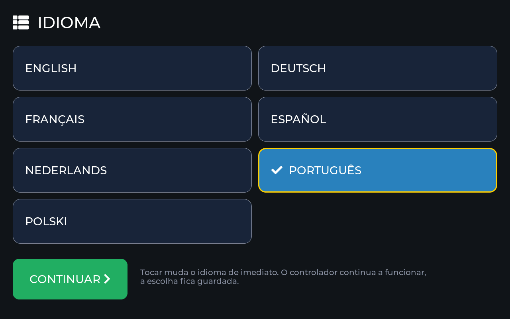
- Tocar no idiomaEstão disponíveis English, Deutsch, Français, Español, Nederlands, Português e Polski. Resultado: os textos mudam de imediato, sem reinício. A escolha fica guardada.
- Tocar em CONTINUARResultado: aparece a configuração.
Mais tarde, o idioma altera-se com a tecla com o nome do idioma em cima à direita na configuração (por exemplo «PORTUGUÊS …»). A interface web mostra sempre o idioma do ecrã.
4.2 Modo de operação e anemómetro ambos
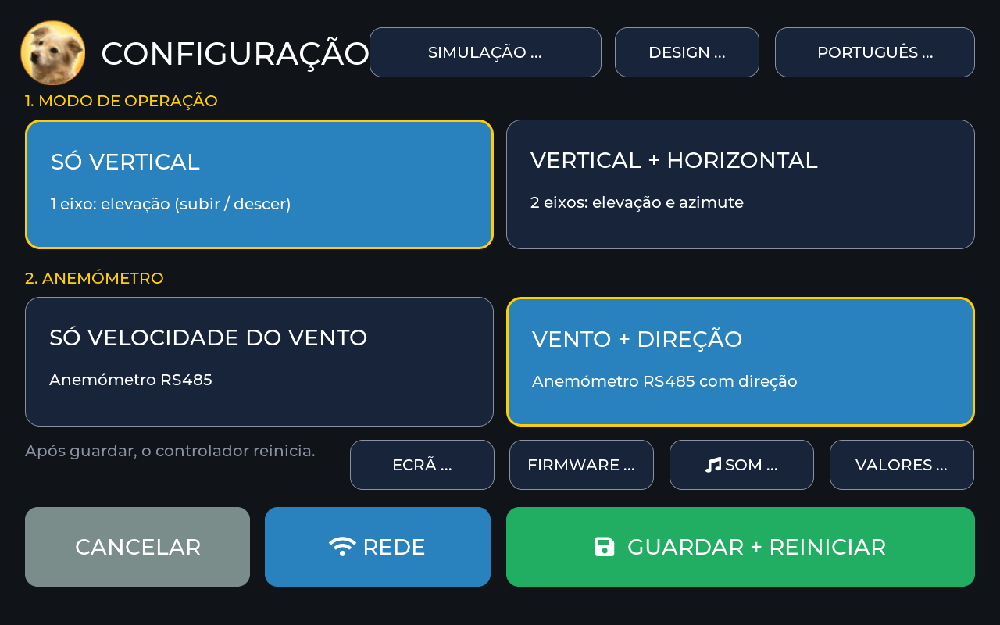
- Escolher o modo de operaçãoSÓ VERTICAL (1 eixo: elevação) ou VERTICAL + HORIZONTAL (2 eixos: elevação e azimute). De fábrica nada está escolhido. Resultado: a tecla escolhida fica azul com contorno amarelo.
- Escolher o anemómetroSÓ VELOCIDADE DO VENTO ou VENTO + DIREÇÃO. Ambos são anemómetros com saída RS485 (Modbus-RTU); outras saídas (impulsos, 0–10 V, 4–20 mA) não são suportadas. Resultado: a tecla fica marcada.
- Tocar em GUARDAR + REINICIARA tecla só funciona quando ambos estiverem escolhidos. Resultado: todas as saídas desligam-se, o controlador reinicia e depois abre-se o assistente de início.
1 eixo só vertical
As saídas do azimute ficam sempre abertas. No ecrã faltam as teclas ESTE e OESTE; em vez disso há o cartão INCLINAÇÃO com ângulos fixos (0°, 30°, 60° e dois ângulos fixos à escolha). Do sensor solar conta apenas norte contra sul.
2 eixos vertical + horizontal
Os dois eixos seguem o sol, sempre um a seguir ao outro. No ecrã há MAIS ÍNGREME, MAIS PLANO, ESTE e OESTE. O sensor solar é avaliado com os quatro lados. O cartão INCLINAÇÃO com ângulos fixos não existe.
Para o Samba-Solar-Rack estão previstos dois sensores separados no mesmo barramento: velocidade do vento (endereço 3) e direção do vento (endereço 4), ou seja, VENTO + DIREÇÃO. A direção do vento só é mostrada e registada; não influencia nem o seguimento nem a proteção contra tempestade. Quem tem apenas um medidor de velocidade escolhe SÓ VELOCIDADE DO VENTO.
O modo de operação e o anemómetro podem ser alterados a qualquer momento. As novas definições só valem depois de GUARDAR + REINICIAR; até lá o controlador continua a funcionar com as anteriores. CANCELAR descarta a seleção. Se tiver alterado o modo de operação, verifique depois a instalação de novo: ASSISTENTE DE INÍCIO → VERIFICAR TUDO DE NOVO (capítulo 5.4).
4.3 As restantes teclas da configuração
| Tecla | Para quê | Vale | Obrigatório? |
|---|---|---|---|
| REDE | Wi-Fi, hotspot, hora, acesso remoto (4.4) | após GUARDAR + REINICIAR | opcional, necessário para a hora |
| DESIGN … | Cores da interface (4.6) | de imediato | opcional |
| SOM … | Sons de teclas, volume (4.7) | de imediato | opcional |
| ECRÃ … | Repouso, sensor de movimento, bateria (4.8) | de imediato | opcional |
| FIRMWARE … | verificar e instalar novo firmware (4.9) | após confirmação | opcional |
| VALORES … | todos os valores ajustáveis, assistente de início (capítulo 7); só depois de guardada a configuração | depende do valor | – |
| SIMULAÇÃO … | Testar sem a placa RearCircuitBoard_10 (4.10) | após confirmação e reinício | só para experimentar |
| PORTUGUÊS … (nome do idioma) | Escolha do idioma (4.1) | de imediato | – |
4.4 Rede: Wi-Fi, hotspot e hora opcional
O Wi-Fi está desligado de fábrica. O controlador nunca precisa dele: o seguimento e a proteção contra tempestade funcionam igualmente sem rede. Com Wi-Fi obtém, porém, a hora exata (assim o aparelho conhece o nascer e o pôr do sol), a interface web para telemóvel e PC e a verificação de novo firmware.
O board não tem relógio próprio com bateria. A hora vem apenas pelo Wi-Fi, de um servidor de hora. Sem Wi-Fi, o aparelho reconhece a noite pela luminosidade (capítulo 6).
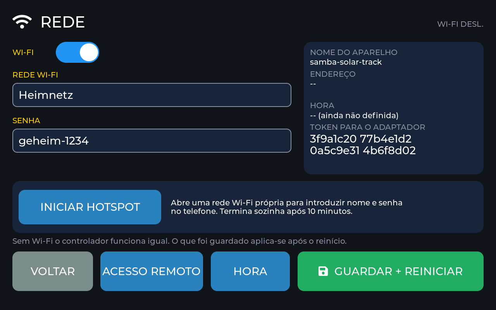
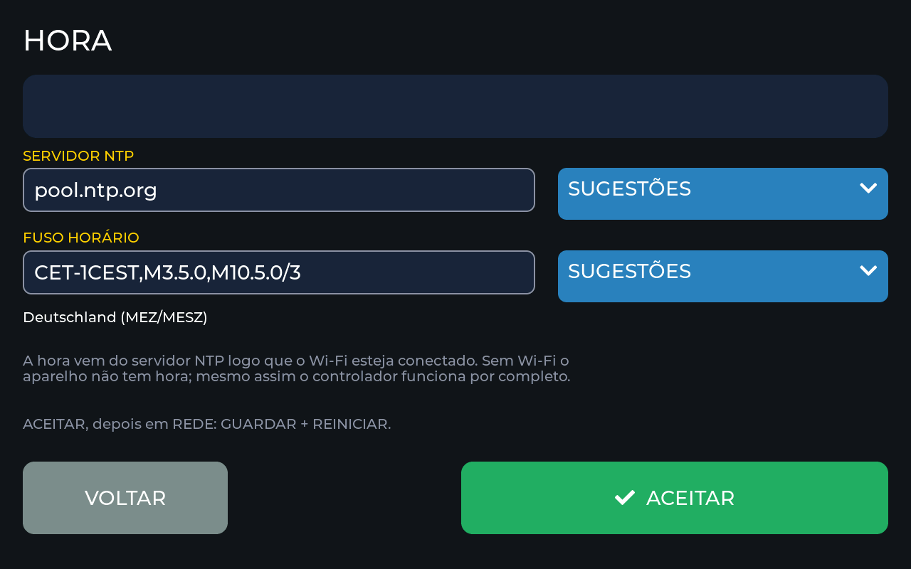
Via A: introduzir no ecrã
- Configuração → REDEResultado: aparece o ecrã REDE, em cima à direita «WI-FI DESL.».
- Ligar o Wi-FiTocar no interruptor Wi-Fi. Resultado: o interruptor fica azul.
- Introduzir o nome da rede Wi-Fi e a palavra-passeTocar no campo, escrever com o teclado no ecrã, confirmar com o visto. O nome tem 1 a 32 caracteres, a palavra-passe está vazia ou tem 8 a 63 caracteres. O teclado não tem acentos nem tremas; para esses nomes use a via B. Resultado: o nome e a palavra-passe aparecem nos campos.
- Verificar a horaTecla HORA. Predefinição: servidor de hora
pool.ntp.org, fuso horário Alemanha (CET/CEST). Se vive noutro fuso horário, escolha-o em SUGESTÕES e toque em ACEITAR. Resultado: regressa ao ecrã REDE. - GUARDAR + REINICIARResultado: todas as saídas desligam-se, o aparelho reinicia e liga-se. No cabeçalho aparece o símbolo Wi-Fi: branco = ligado, amarelo = sem ligação. Pouco depois aparece a hora à esquerda.
Via B: pelo hotspot de configuração (com o telemóvel)
- REDE → INICIAR HOTSPOTResultado: o aparelho abre uma rede Wi-Fi própria «Samba-Setup-» com quatro caracteres. O nome e a palavra-passe aparecem no ecrã; a palavra-passe é diferente em cada arranque.
- Ligar o telemóvel a esta rede Wi-Fi e abrir
http://192.168.4.1no browserResultado: aparece a página de configuração (imagem à direita) com uma lista das redes Wi-Fi encontradas. - Escolher a rede Wi-Fi, introduzir a palavra-passe e o nome do aparelho, guardarO nome do aparelho é composto por a–z, 0–9 e hífen, de fábrica
samba-solar-track. Resultado: o aparelho reinicia após 1,5 s e liga-se à sua rede Wi-Fi.

O hotspot termina sozinho após 10 minutos. Enquanto estiver ativo, a ligação à rede Wi-Fi fica em pausa.
No endereço mostrado no ecrã REDE, ou em http://samba-solar-track.local (ou no nome do aparelho que tiver atribuído). Se a ligação falhar, o aparelho tenta de novo a cada 30 segundos, sem fim.
4.5 Acesso remoto: registar o telemóvel, bloquear o comando remoto opcional
- Código QR: aparece logo que o Wi-Fi esteja ligado. Ler com o telemóvel; o browser abre a interface web e fica registado. Sem registo, o browser só pode observar.
- Token: uma chave secreta de 32 caracteres que o próprio aparelho gera. No PC, introduza-a na interface web em INTRODUZIR TOKEN; o ecrã REDE mostra-a em quatro blocos.
- COMANDO REMOTO: bloqueado, o aparelho não aceita à distância nenhum comando nem nenhuma alteração; as indicações continuam. Bloquear quando alguém estiver a trabalhar na mecânica. Vale de imediato.
- RENOVAR TOKEN: quando um telemóvel se perdeu. Com pedido de confirmação; depois todos têm de se registar de novo. Vale de imediato.
4.6 Design opcional
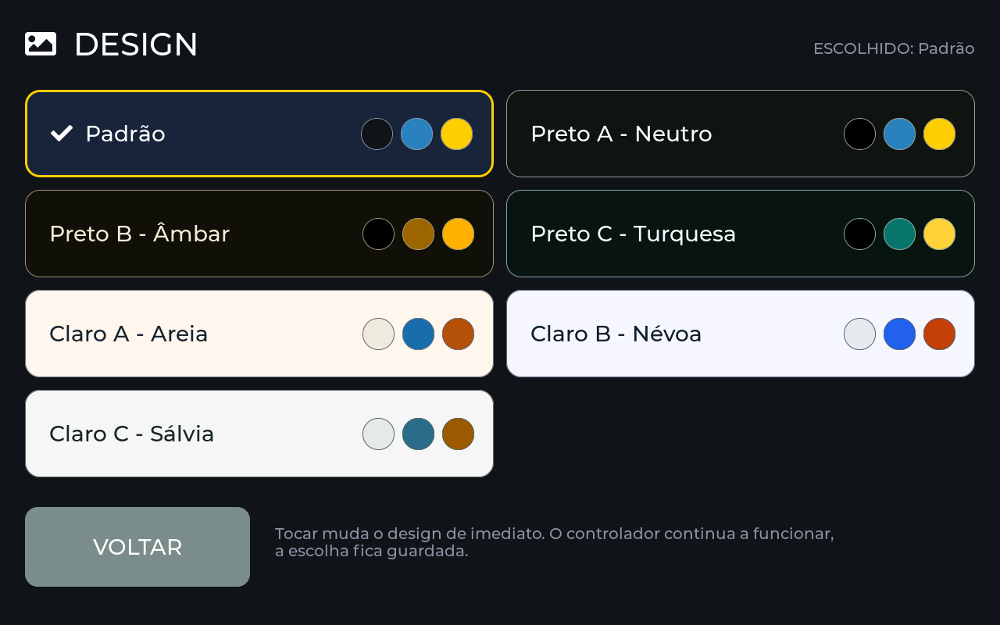
Tocar muda o design de imediato, no ecrã e na interface web. O controlador continua a funcionar entretanto.
4.7 Som opcional
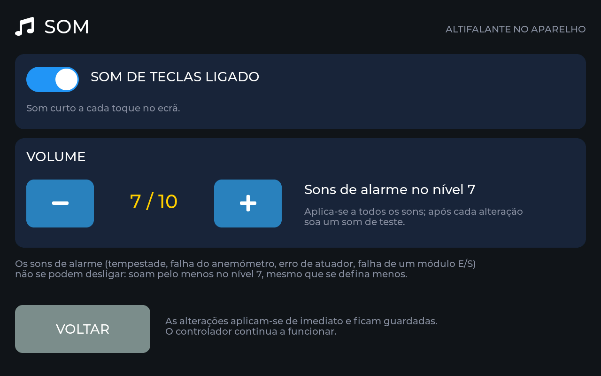
| Ajuste | Predefinição | Possível | Nota |
|---|---|---|---|
| Sons de teclas | ligado | ligado / desligado | som curto a cada operação no ecrã |
| Volume | 7 de 10 | 1 a 10 | após cada alteração soa um som de teste |
| Sons de alarme | ligado | só mais baixos, nunca desligados | com tempestade, falha do anemómetro, erro do atuador e avaria de um circuito; soam sempre pelo menos com o nível 7 |
As alterações valem de imediato e ficam guardadas. O som só se ajusta no ecrã.
4.8 Ecrã: repouso, sensor de movimento, bateria opcional
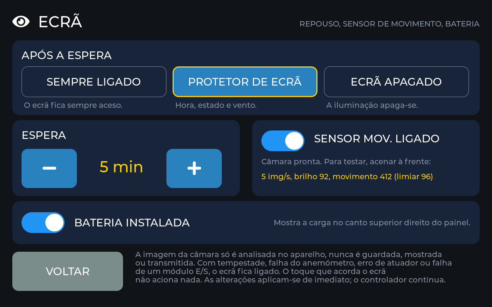
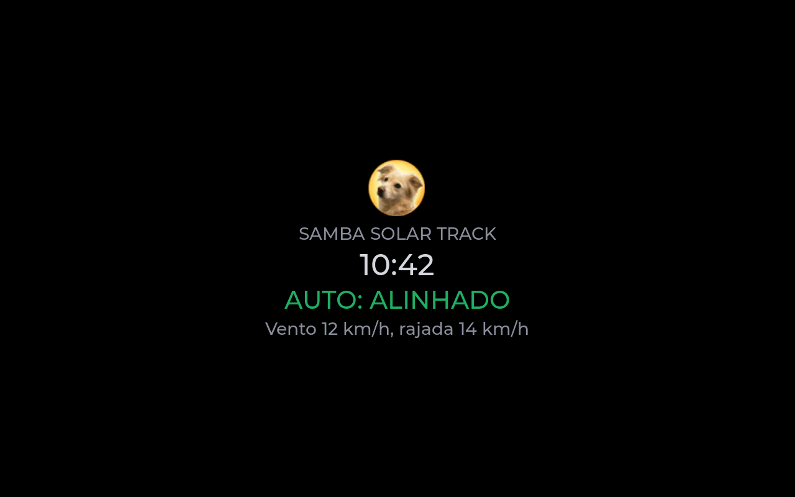
| Ajuste | Predefinição | Possível |
|---|---|---|
| Após a espera | PROTETOR DE ECRÃ | SEMPRE LIGADO · PROTETOR DE ECRÃ · ECRÃ APAGADO |
| Tempo de espera | 5 min | 1 a 60 min (teclas − e +) |
| Sensor de movimento | ligado | ligado / desligado |
| Bateria instalada | sim | sim / não (mostra o nível em cima à direita no dashboard) |
Um movimento diante do ecrã ou um toque acorda-o; o toque que o acorda não aciona nenhuma operação. Com tempestade, falha do anemómetro, erro do atuador e avaria de um circuito, o ecrã liga-se sozinho. A imagem da câmara integrada só é avaliada no aparelho, nunca é guardada, mostrada ou transmitida.
No ecrã ECRÃ, por baixo do interruptor, há uma linha com «movimento …». Acene diante do ecrã: o número tem de subir. Se estiver demasiado escuro, aparece «muito escuro».
4.9 Firmware opcional
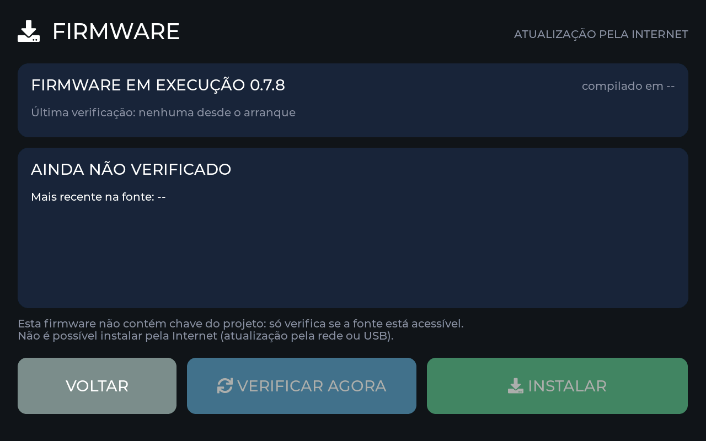
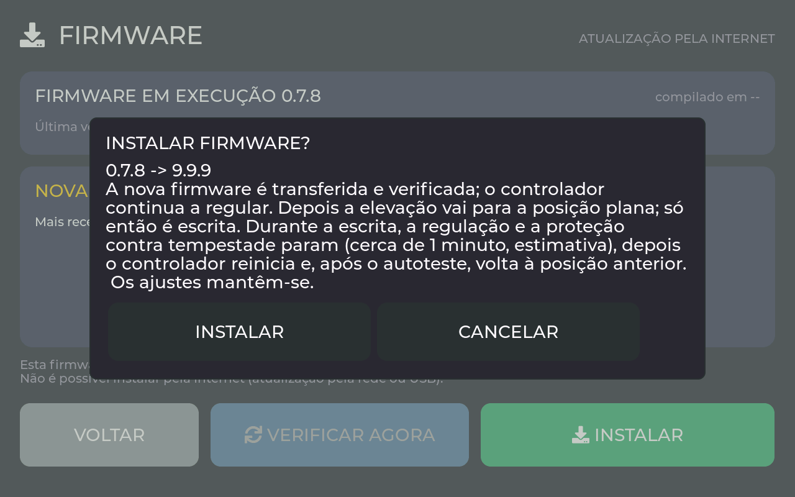
Com Wi-Fi, o aparelho verifica uma vez por dia se existe um firmware mais recente. Nunca instala sozinho, só quando toca em INSTALAR e confirma o pedido. Antes da gravação, a elevação fica plana; durante a gravação, a regulação e a proteção contra tempestade ficam brevemente em pausa. Depois o aparelho reinicia e verifica-se a si próprio; se isso falhar, regressa ao firmware anterior. As definições guardadas mantêm-se.
4.10 Simulação: experimentar sem placa
Com a simulação pode experimentar a operação sem a placa RearCircuitBoard_10, sem atuadores e sem sensores, por exemplo à secretária. Só é possível ligá-la quando a placa não estiver encaixada, e é preciso confirmar. O ecrã mostra a simulação permanentemente. Se a placa estiver encaixada no arranque, uma simulação guardada desliga-se sozinha. Também o assistente de início pode ser percorrido na simulação; o seu relatório de teste fica então marcado como «SIMULAÇÃO».
Um assistente de início concluído apenas na simulação não vale no rack real. Quando o aparelho arranca pela primeira vez com a placa encaixada, o assistente de início recomeça sozinho no passo 1. Até estar aprovado no rack real, o automático fica bloqueado (faixa violeta «FALTA O ASSISTENTE DE INÍCIO»); a proteção contra tempestade e o estacionamento continuam a atuar. Não precisa de fazer nada para isso, além de percorrer o assistente de início no rack (capítulo 5).
5O assistente de início
O assistente de início verifica uma vez, no rack montado, tudo o que conta para um funcionamento seguro: placa, anemómetro, sentidos de movimento, cursos, sensor solar e o automático. Onde uma pessoa tem de avaliar, pergunta. Onde o próprio aparelho pode medir, mede. Só quando todos os passos obrigatórios estiverem aprovados é que a instalação segue o sol sozinha.
O assistente de início está implementado no firmware 0.7.0 e foi verificado com testes automáticos e na simulação, mas nunca correu num rack real. Ainda não há valores-limite para tempos de curso, passos Hall e ângulos (decisão E-S3): «aprovado» significa limite atingido ou confirmado por si; os valores medidos ficam no relatório de teste.
5.1 Antes de começar
- Pouco vento. Com tempestade, qualquer teste de movimento é interrompido e o rack fica plano.
- Luz do dia ou uma lâmpada forte. O sensor solar e o teste precisam de luz (pelo menos o limiar de dia, de fábrica soma 6000).
- Duas pessoas são melhor do que uma. Uma fica junto ao ecrã, a outra observa o rack. Se o ecrã estiver longe, use um telefone para combinar.
- Visão livre sobre o rack e sobre o anemómetro; uma escada para o anemómetro, se estiver alto (só subir ao rack com a fonte de alimentação desligada, se assim entrar na zona de rotação).
- Um telemóvel com aplicação de inclinómetro (nível de bolha) para o passo «Ir para um ângulo» 1 eixo e uma bússola (também como aplicação) para o local.
Como se abre
- Depois de guardar a configuração, abre-se sozinho.
- Se o deixar (CONTINUAR MAIS TARDE), o dashboard mostra em baixo a faixa violeta «FALTA O ASSISTENTE DE INÍCIO: AUTOMÁTICO BLOQUEADO – TOCAR AQUI PARA CONTINUAR». Tocar volta a abri-lo no mesmo ponto.
- Além disso, pela roda dentada → VALORES → ENTRADA EM SERVIÇO → linha verde ASSISTENTE DE INÍCIO (VERIFICAR TUDO).
- O progresso fica guardado, também após um reinício ou uma falha de energia.
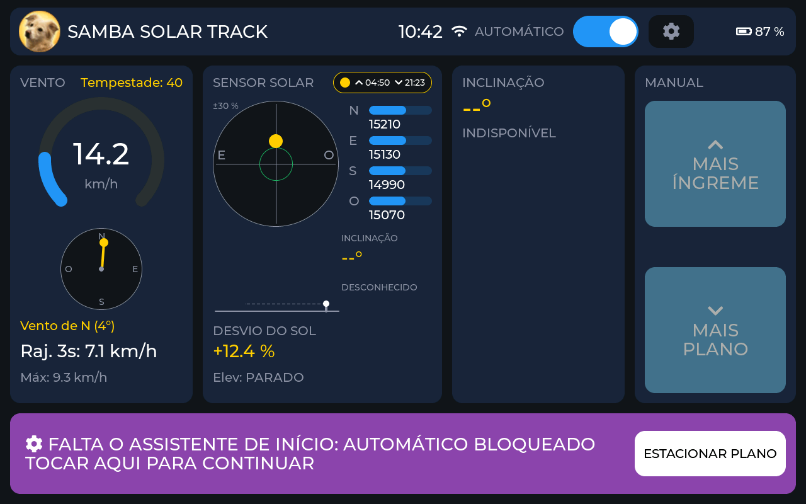
As teclas em baixo
| Tecla | O que faz |
|---|---|
| CONTINUAR MAIS TARDE | Sai do assistente de início. Qualquer movimento para, o progresso fica. O automático continua bloqueado. |
| PASSO ATRÁS | Vai para o passo anterior (não no primeiro passo nem depois da conclusão). |
| SALTAR | Só nos passos opcionais: Wi-Fi e hora, local, luzes/som/sensor de movimento. Os passos de movimento e de segurança nunca podem ser saltados. |
| STOP (vermelho) | Aparece em cada movimento. Para de imediato. |
| REPETIR | Depois de uma interrupção ou de uma correção: fazer o passo outra vez. |
Fins de curso, tempo máximo de curso, tempo morto e ciclo de trabalho atuam também no assistente de início. Mesmo assim, os atuadores não param se houver uma mão no caminho. Ninguém na zona de rotação, nem animais. Se vier uma tempestade, o passo é interrompido e o rack fica plano (imagem abaixo).
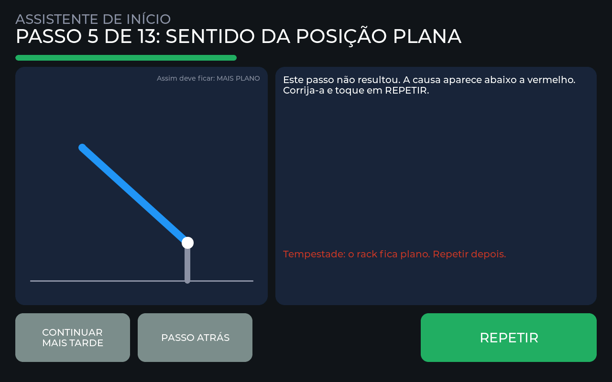
5.2 Os passos em resumo
| N.º | Passo | 1 eixo | 2 eixos | Move o rack? |
|---|---|---|---|---|
| 1 | Segurança | ✓ | ✓ | não |
| 2 | Dados da instalação | ✓ | ✓ | não |
| 3 | Placa e alimentação | ✓ | ✓ | não |
| 4 | Anemómetro | ✓ | ✓ | não |
| 5 | Sentido da posição plana | ✓ | ✓ | sim: brevemente, depois totalmente plano |
| 6 | Curso da inclinação | CALIBRAR TEMPO DE CURSO | totalmente íngreme e de volta | sim: curso completo |
| 7 | Rotação este – oeste | – | ✓ | sim: curso completo |
| (+1) | Reset do controlador síncrono | só se em «Dados da instalação» estiver escolhida uma ligação de reset | sim: totalmente plano | |
| 7 | Ir para um ângulo | ✓ | – | sim: para 30° |
| 8 | Sensor solar | sul, norte | este, oeste, sul, norte | não |
| 9 | Wi-Fi e hora opcional | ✓ | ✓ | não |
| 10 | Local opcional | com orientação | sem orientação | não |
| 11 | Luzes, som, sensor de movimento opcional | ✓ | ✓ | não |
| 12 | Teste do automático | Inclinação | inclinação, depois rotação | sim: um pouco |
| 13 | Concluído | ✓ | ✓ | não |
Os dois modos de operação têm 13 passos: com 2 eixos acrescenta-se «Rotação este – oeste», com 1 eixo «Ir para um ângulo». Se estiver configurado um reset do controlador síncrono (por exemplo no Samba-Solar-Rack com BST-KZQ-15A-2), são 14, e a partir desse passo os números avançam um. O cabeçalho mostra sempre «PASSO n DE m».
5.3 Passo a passo
1Segurança ambos
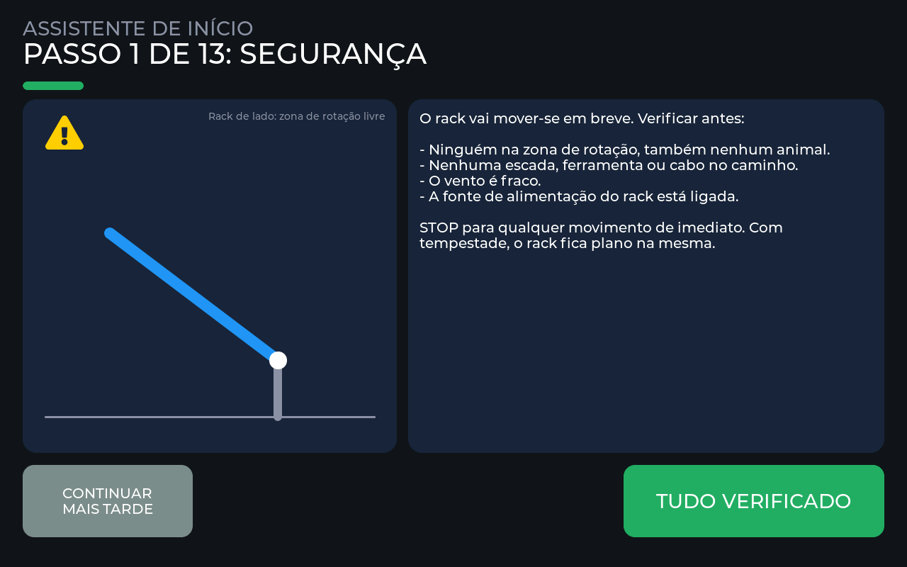
«O rack vai mover-se em breve. Verificar antes» com quatro pontos e a tecla TUDO VERIFICADO.
- Ninguém na zona de rotação, nem animais.
- Nenhuma escada, nenhuma ferramenta, nenhum cabo no caminho.
- O vento está fraco.
- A fonte de alimentação no rack está ligada.
Depois TUDO VERIFICADO.
Aparece o passo 2.
Primeiro pôr tudo em ordem. Este passo não pode ser saltado.
2Dados da instalação ambos
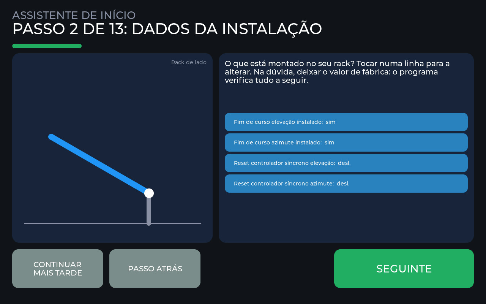
Linhas azuis com o que está instalado no seu rack, cada uma com o valor atual.
Tocar em cada linha até aparecer o valor certo (cada toque passa ao seguinte). O que os valores significam e o que está certo para o seu rack: fins de curso, leitura Hall, estrutura, reset. Depois SEGUINTE.
As linhas mostram os seus valores. Aparece o passo 3.
Se não souber, deixe a predefinição. Os passos seguintes verificam.
Samba-Solar-Rack 2.0-E Plus
Fim de curso elevação: não · Leitura Hall: sim, se o HallTapBoard estiver instalado · Estrutura: G2 · Reset controlador síncrono elevação: J23 (placa a partir do projeto 0.12, controlador síncrono BST-KZQ-15A-2).
Outro rack
Fins de curso: sim só se houver fins de curso próprios no fim do curso ligados à placa. Estrutura: linear. Reset: desl., a menos que o seu controlador síncrono tenha uma entrada de reset e esta esteja ligada.
3Placa e alimentação ambos
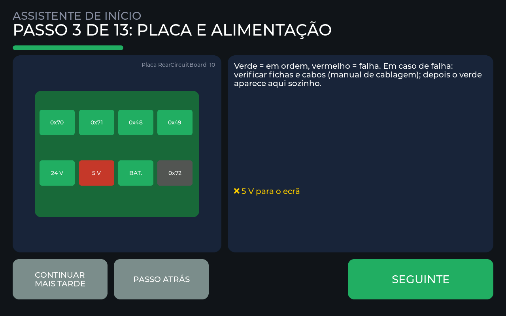
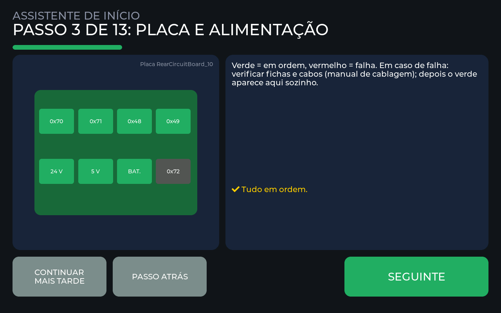
Primeiro uma explicação com VERIFICAR, depois uma imagem da placa com oito campos.
Tocar em VERIFICAR, esperar um pouco.
Todos os campos verdes ou cinzentos, à direita «Tudo em ordem». Depois SEGUINTE.
Campo vermelho: verificar fichas e cabos (manual de cablagem, só em alemão). O campo fica verde sozinho logo que o erro desapareça. Só então SEGUINTE funciona.
| Campo | O que é verificado | Vermelho significa |
|---|---|---|
| 0x70 | Circuito das saídas de comutação e dos fins de curso | a placa não está bem encaixada ou tem avaria; sem ele nada se move |
| 0x71 | Circuito das luzes de sinalização | luzes e vigilância da alimentação com avaria |
| 0x48 | Medição do sensor solar | circuito com avaria ou alimentação do sensor solar sobrecarregada (curto-circuito no cabo?) |
| 0x49 | Medição da alimentação | o segundo circuito de medição não responde |
| 24 V | 24 V da fonte de alimentação | fonte de alimentação do controlador desligada ou fusível |
| 5 V | 5 V para o ecrã | o conversor de tensão da placa não fornece |
| BAT. | Bloqueio de carga da bateria e alimentação do sensor | bloqueio de carga não plausível (ver manual de instalação e utilização, capítulo 7) |
| 0x72 | Circuito dos contactos de reset (terminal J23) | cinzento, se não estiver escolhido nenhum reset em J23; vermelho, se estiver escolhido mas não responder (placa anterior ao projeto 0.12?) |
4Anemómetro ambos
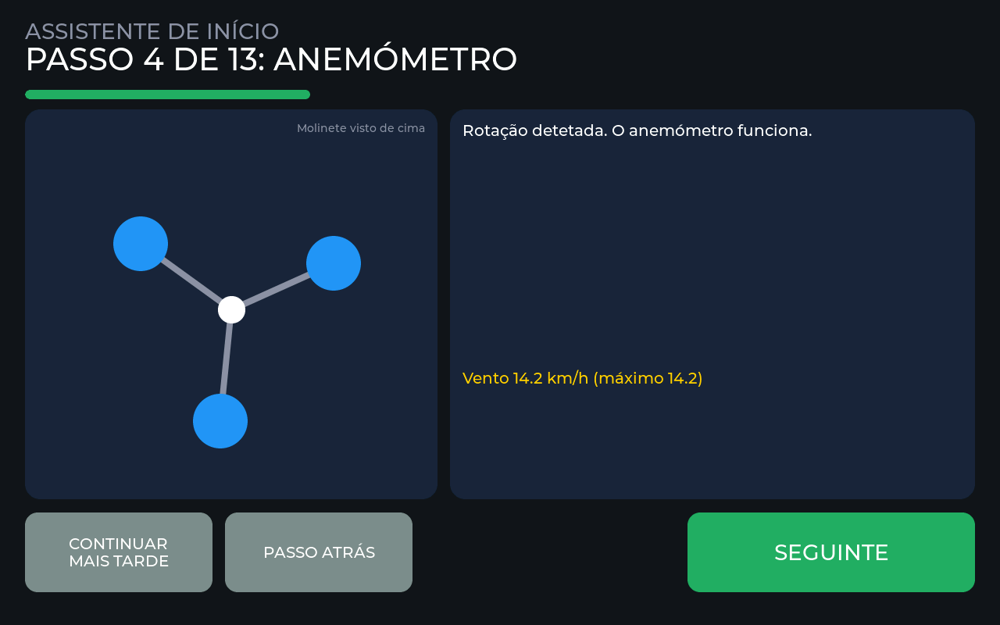
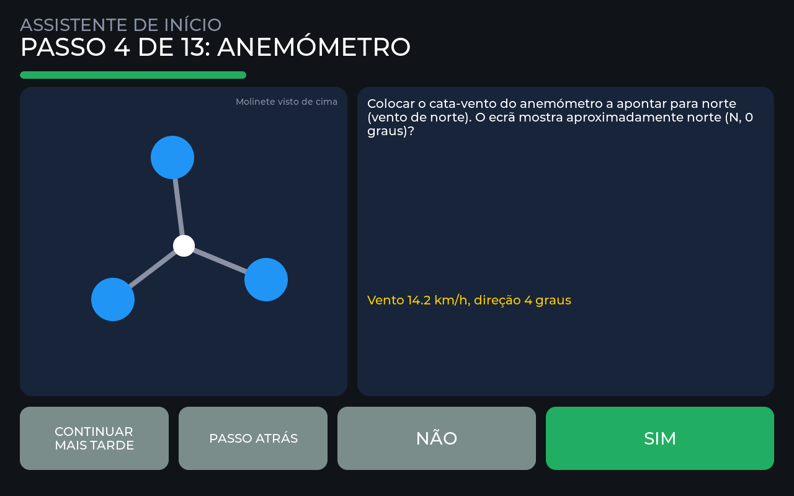
Um rotor visto de cima; em baixo à direita, a amarelo, «Vento … km/h (máximo …)».
- Tocar em INICIAR.
- Rodar o rotor com força à mão.
- SEGUINTE.
- Só com direção do vento: apontar o cata-vento a norte e ver se o ecrã mostra cerca de N (0°); SIM ou NÃO.
Ao rodar, a leitura sobe pelo menos 2 km/h e o texto muda para «Rotação detetada». A direção mostra cerca de norte.
«O anemómetro ainda não foi rodado»: rodar com mais força. Nenhum número: o anemómetro não responde; verificar a cablagem e os dados do anemómetro. Direção errada (NÃO): verificar a montagem e a marca de norte do anemómetro, depois REPETIR.
5Sentido da posição plana ambos
O passo mais importante: define para onde o rack vai com tempestade (capítulo 3).
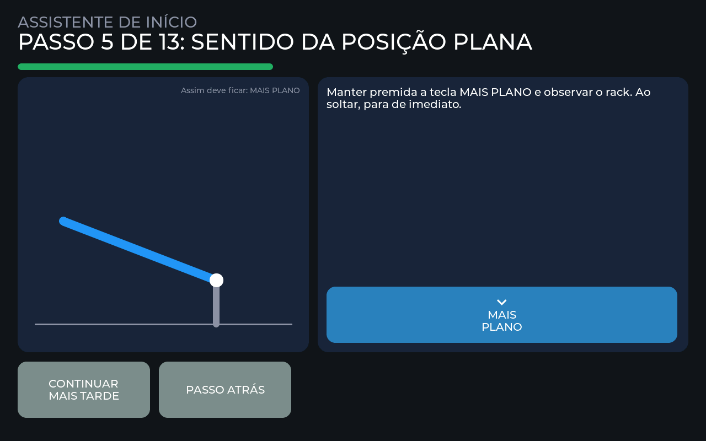
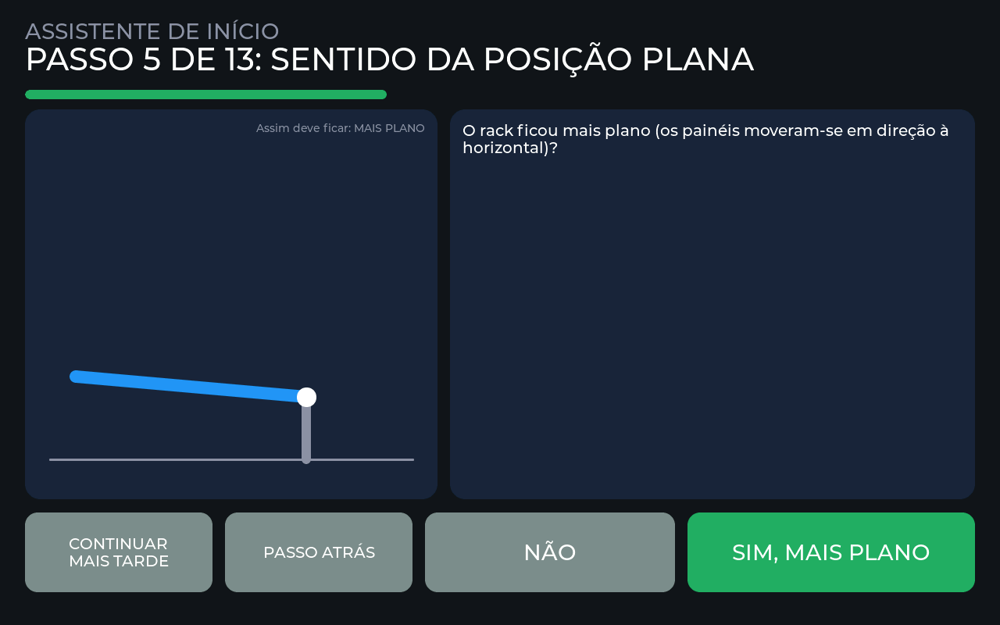
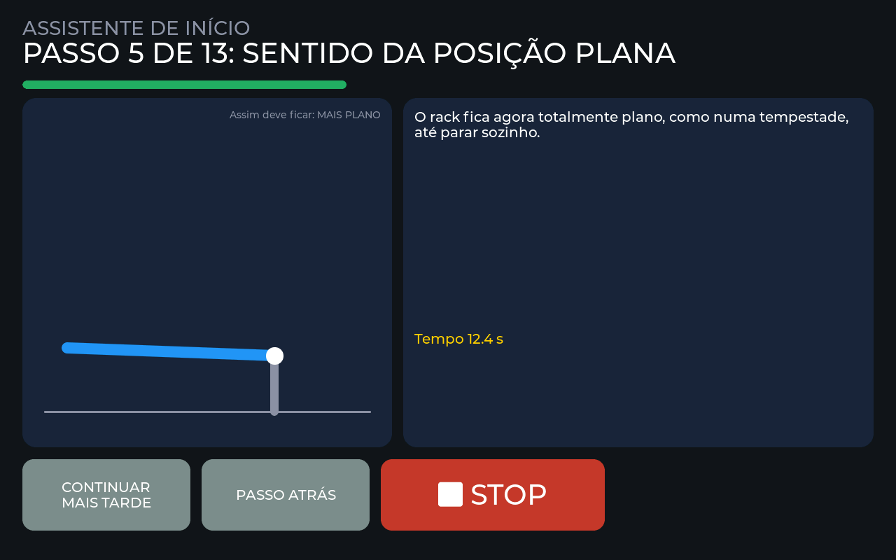
À esquerda um esboço «Assim deve ficar: MAIS PLANO», à direita as instruções e uma tecla grande MAIS PLANO.
- SEGUINTE.
- Manter premido MAIS PLANO e observar o rack. Soltar para de imediato; após 5 s para sozinho.
- SIM, MAIS PLANO, se os painéis se moveram em direção à horizontal; caso contrário NÃO.
- Observar até o rack parar sozinho.
O rack fica mais plano e depois vai até ao limite. «A posição plana está verificada. A partir de agora a proteção contra tempestade protege o rack com segurança.»
Com NÃO, o aparelho troca o sentido sozinho (valor «A posição plana fica no sentido SUBIR»): «Ainda bem que verificámos», depois REPETIR. Se nada se moveu: verificar a fonte de alimentação no rack, a cablagem dos contactos e o controlador síncrono (modo momentâneo?). Se o rack já estiver totalmente plano, o aparelho pergunta de imediato se está plano.
Se «Fim de curso elevação instalado» estiver em não, o controlador espera todo o tempo máximo de curso, mesmo que o rack já esteja parado (limite por tempo de curso). No Samba-Solar-Rack são 90 s. Com leitura Hall, o movimento termina cerca de 1 s depois de os impulsos pararem.
6Curso da inclinação
1 eixo CALIBRAR TEMPO DE CURSO
O aparelho mede quanto tempo o rack demora de totalmente plano a totalmente íngreme e de volta. A partir disso conhece mais tarde cada ângulo. Toque em CALIBRAR TEMPO DE CURSO; um ecrã próprio guia em quatro passos (imagens abaixo). Depois regressa e toca em SEGUINTE.
2 eixos totalmente íngreme e de volta
INICIAR: o rack vai totalmente íngreme até ao batente e depois totalmente plano até ao batente. O aparelho mede os dois tempos. Depois pergunta se o rack foi totalmente íngreme e de novo totalmente plano sem prender nem bater.
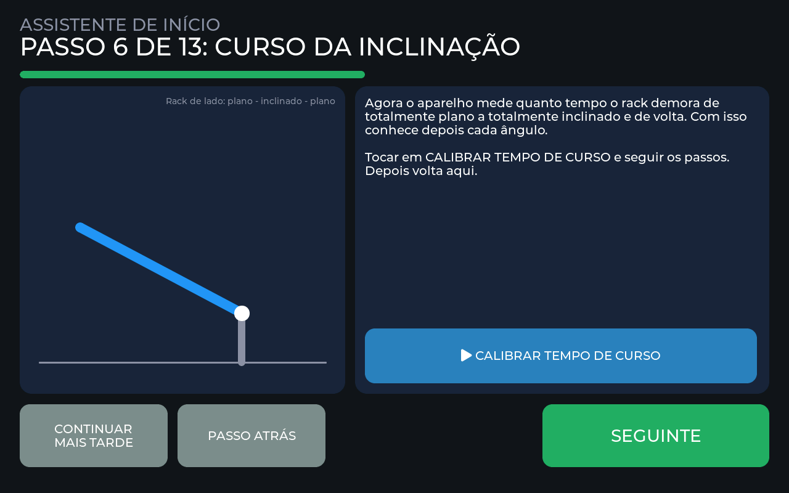
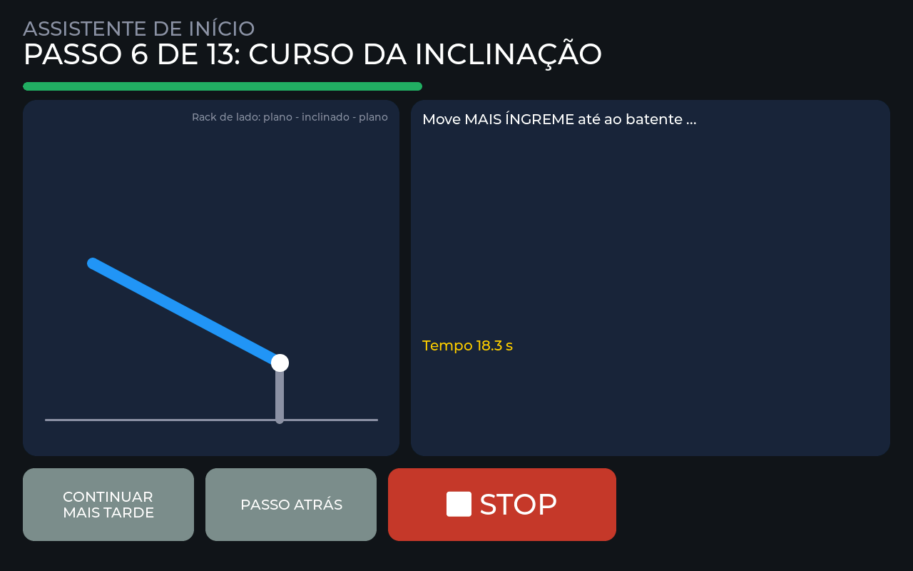
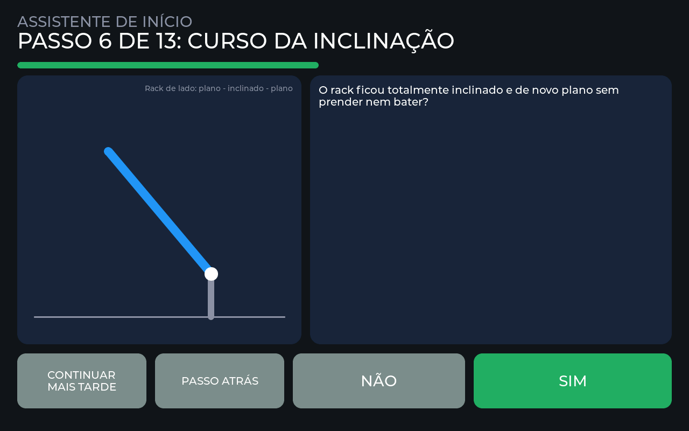
1 eixo Os quatro passos de CALIBRAR TEMPO DE CURSO
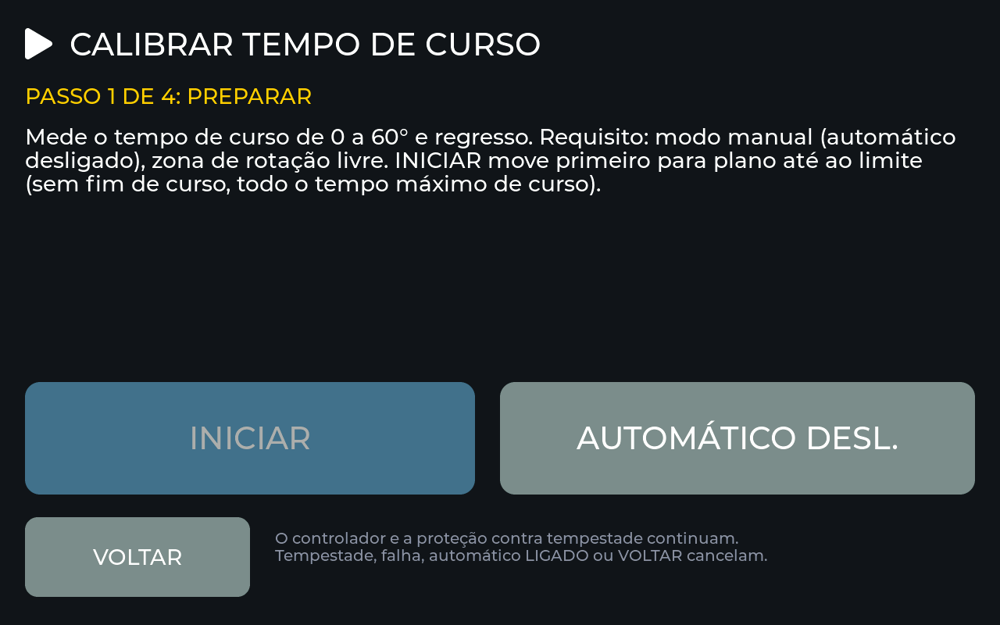
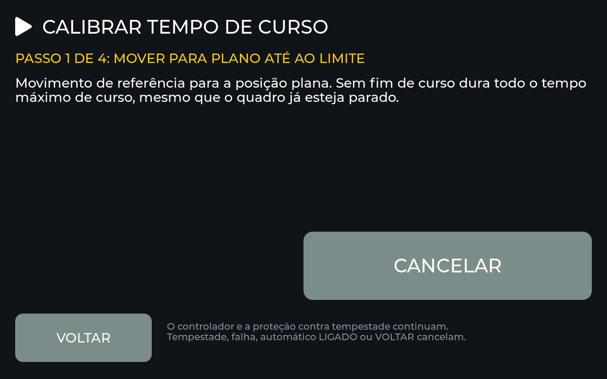
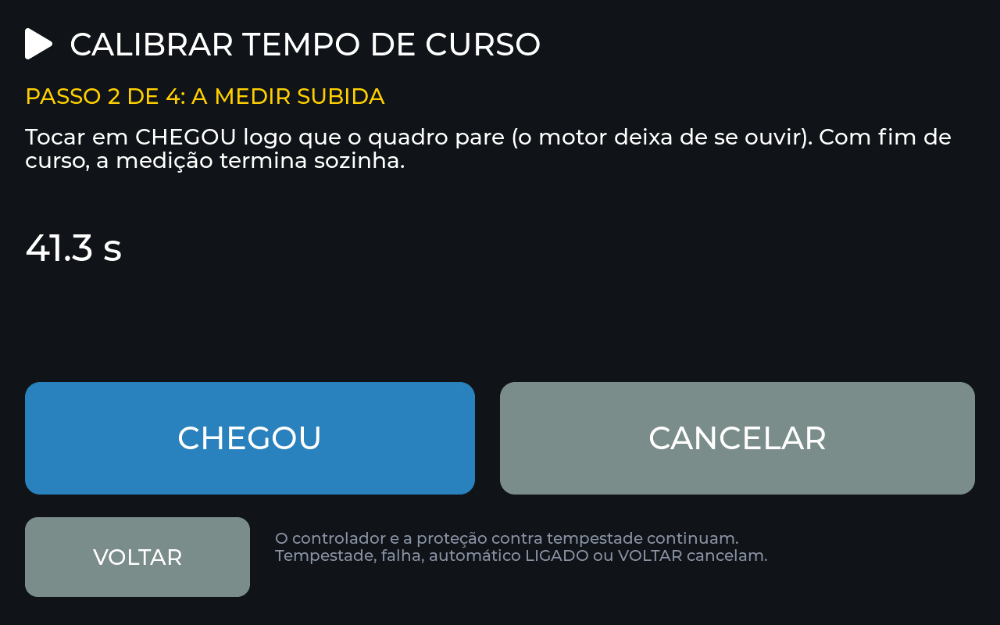
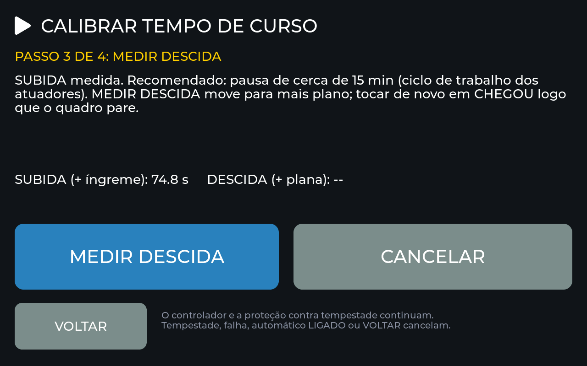
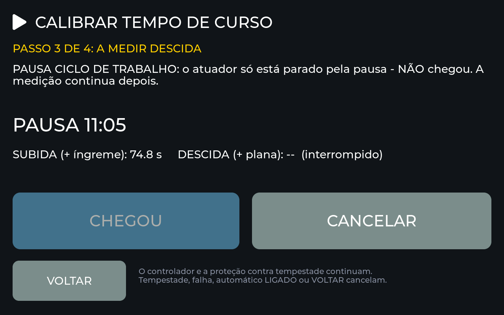
1 eixo a tecla CALIBRAR TEMPO DE CURSO. 2 eixos o tempo de curso a decorrer, depois a pergunta.
1 eixo percorrer CALIBRAR TEMPO DE CURSO, ACEITAR, voltar, SEGUINTE. 2 eixos INICIAR, observar, SIM ou NÃO.
O rack atinge os dois limites sem prender nem bater. 1 eixo «Ambos os tempos são plausíveis»: cada um pelo menos 10 s, menos de 0,9 × tempo máximo de curso, SUBIDA e DESCIDA no máximo na proporção 1 : 2.
«O tempo de curso ainda não está calibrado»: calibrar primeiro. Interrupção «TEMPO MÁXIMO CURTO DEMAIS OU CHEGOU NÃO TOCADO»: aumentar o tempo máximo de curso. NÃO com 2 eixos: verificar a mecânica e o atuador (manual de montagem do rack), depois REPETIR.
Se «Leitura Hall presente» estiver em sim, a linha chama-se «CALIBRAR: TEMPO DE CURSO E PASSOS HALL». Os movimentos de medição terminam então sozinhos e contam os passos Hall; plausíveis são pelo menos 1000 passos cada, SUBIDA e DESCIDA no máximo 3 % diferentes. Se a recusa for «HALL CONTA AO CONTRÁRIO», ponha «Inverter sentido de contagem Hall» em sim.
7Rotação este – oeste 2 eixos
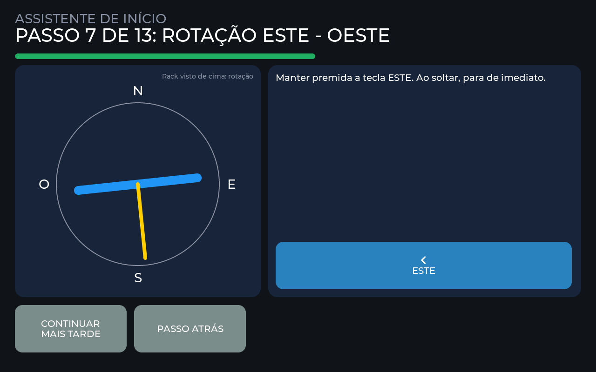
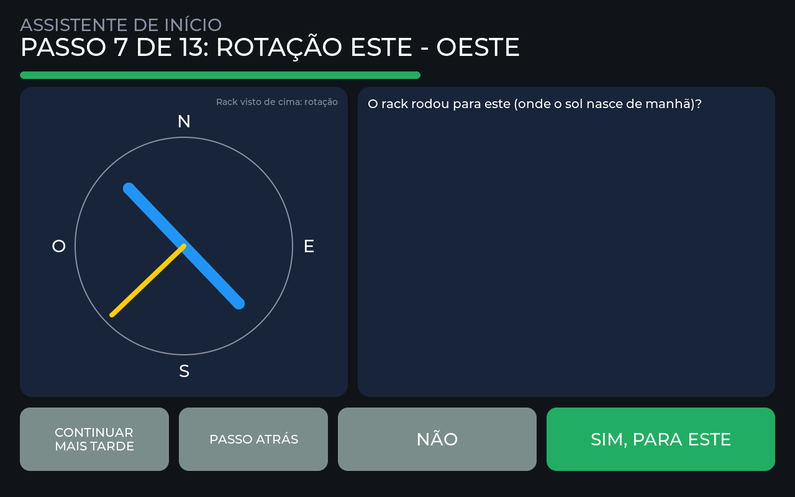
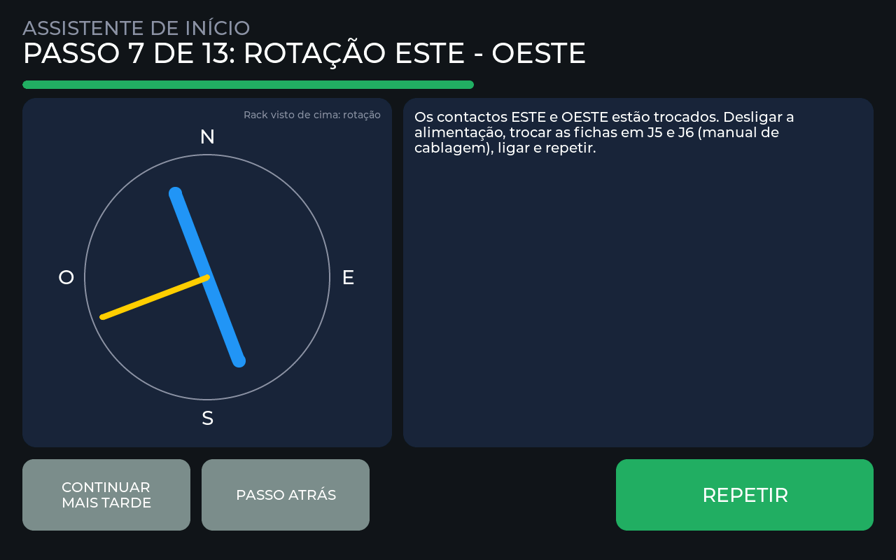
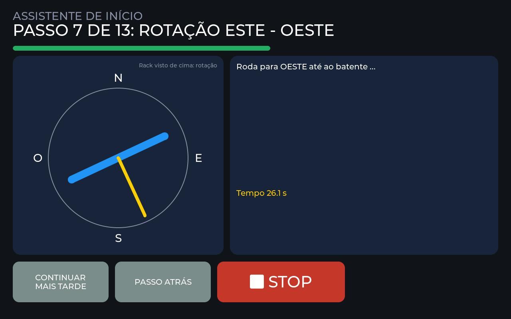
À esquerda uma vista de cima com bússola (amarelo: direção dos painéis), à direita as instruções e a tecla ESTE.
- SEGUINTE, depois manter premido ESTE (no máximo 5 s).
- SIM, PARA ESTE, se o rack rodou para o sol da manhã.
- Observar: o rack roda totalmente para este, totalmente para oeste e de volta para este.
Os três movimentos atingem o seu batente. «Rotação verificada. O rack está na posição matinal.»
NÃO: isto não se corrige por definição. Desligar a fonte de alimentação, trocar as fichas em J5 e J6 (manual de cablagem, só em alemão), ligar, REPETIR. Nenhum movimento: verificar a fonte de alimentação e a cablagem do atuador do azimute.
+Reset do controlador síncrono só se configurado
Este passo só existe se no passo 2 estiver escolhida uma ligação de reset. Vem depois do curso (com 2 eixos, depois da rotação). Ainda não há imagem própria para ele; o processo é mostrado pela faixa no dashboard, como no reset por VALORES.
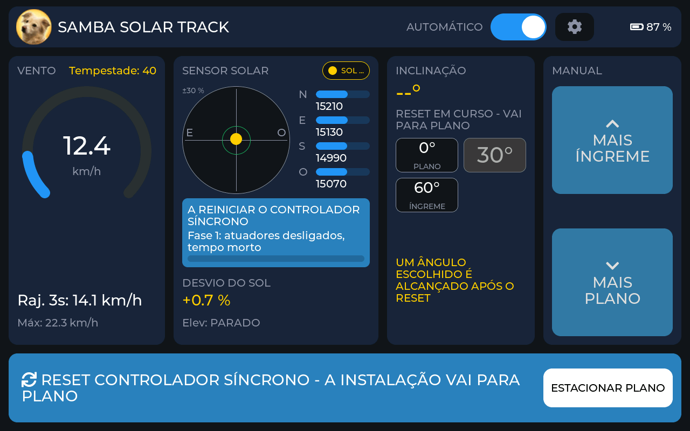
«O controlador síncrono dos atuadores tem uma entrada de reset. O aparelho vai ativá-la em breve.» e a tecla ATIVAR RESET.
ATIVAR RESET, observar. Com 2 eixos e dois resets, ambos correm um a seguir ao outro.
O controlador síncrono recolhe totalmente os atuadores (no rack: plano). «Reset verificado.»
«Reset impossível (verificar ligação ou chip)»: não começou em 20 s; verificar o terminal J23 ou J5 e o valor reset. «RESET INTERROMPIDO»: a causa aparece na faixa de estado; depois REPETIR.
A duração do impulso de reset (5 s) e o comportamento do controlador síncrono a seguir ainda não foram medidos no rack.
7Ir para um ângulo 1 eixo
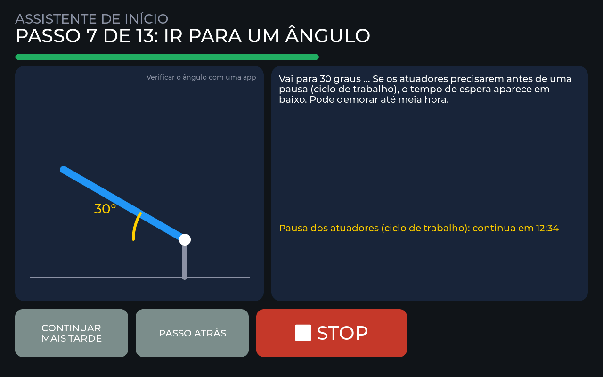
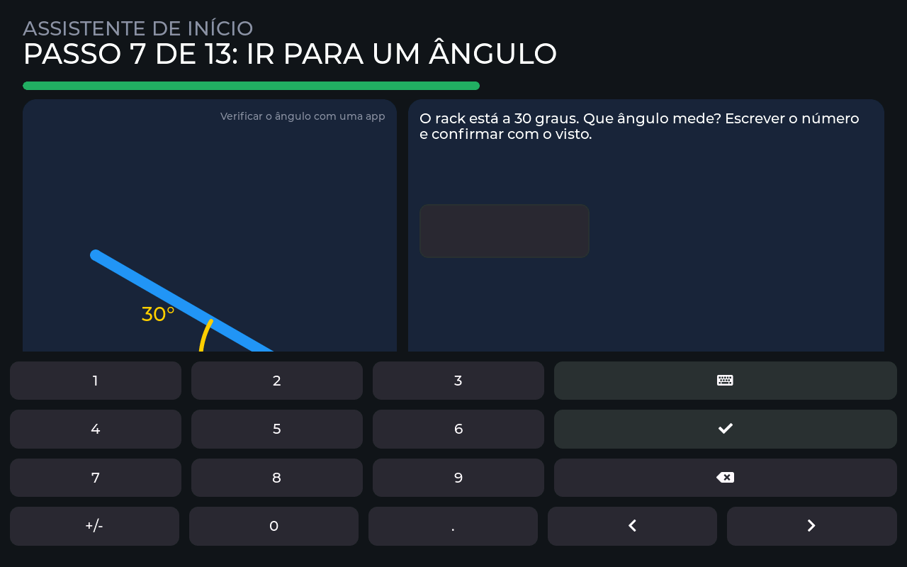
«Agora o rack vai para 30 graus.» e a tecla IR PARA 30 GRAUS.
Tocar na tecla, esperar. Depois pousar o telemóvel plano num painel, ler o ângulo, introduzi-lo (0 a 90), visto.
O rack para em cerca de 30°. «Ângulo registado. Consta do relatório de teste.»
«Ângulo inalcançável (tempo de curso ou sensor Hall)»: repetir o passo 6. Se o seu valor for muito diferente: verificar a estrutura. Ainda não existe um limite a partir do qual o passo falha.
8Sensor solar

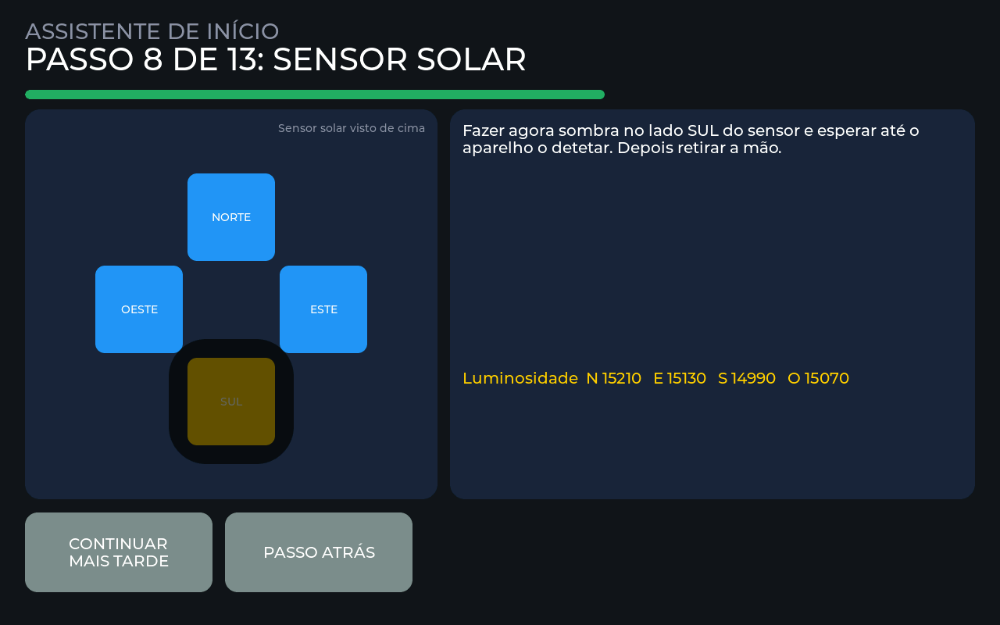
O sensor visto de cima com quatro campos. O lado em que deve fazer sombra está marcado.
INICIAR. Depois fazer sombra no lado indicado, esperar até o aparelho o detetar, retirar a mão. 1 eixo SUL, depois NORTE. 2 eixos ESTE, OESTE, SUL, NORTE.
Cada lado fica pelo menos 25 % mais escuro e é detetado durante 1 s. «Todos os lados do sensor estão bem atribuídos.»
Se o aparelho detetar outro lado, corrige sozinho a atribuição das entradas e regista-o no relatório de teste. «Demasiado escuro»: repetir com luz do dia ou com uma lâmpada forte. Nada é detetado: fazer uma sombra maior, mais perto do sensor.
9Wi-Fi e hora opcional
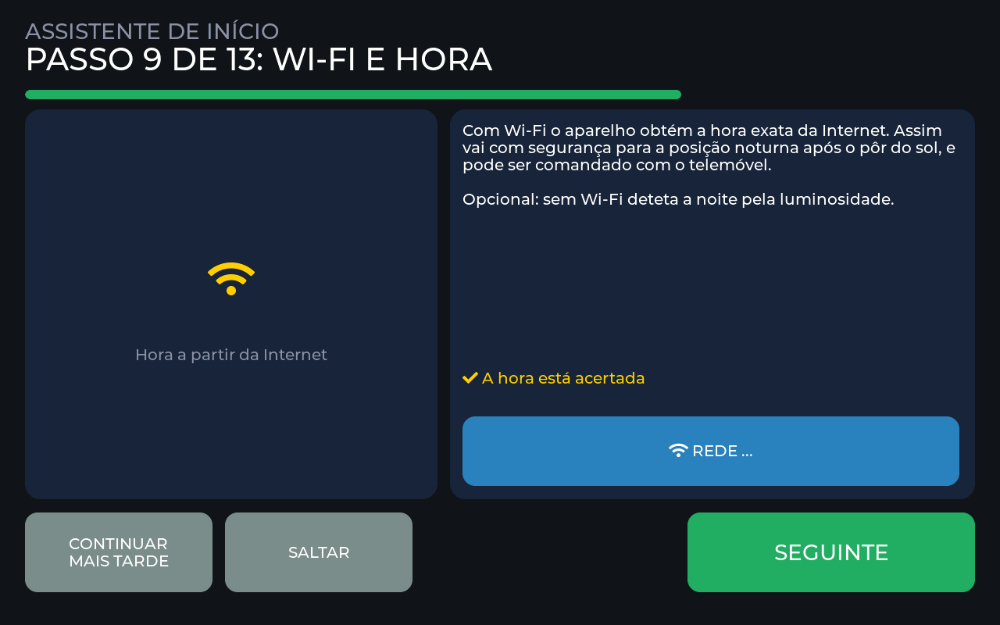
Uma explicação, a tecla REDE … e SEGUINTE.
REDE … abre o ecrã do capítulo 4.4. Após o reinício, o assistente de início abre-se de novo neste ponto. Ou SALTAR.
«A hora está acertada», depois SEGUINTE.
«Ainda sem hora: configurar o WiFi ou saltar.» Sem Wi-Fi, o aparelho reconhece a noite pela luminosidade.
10Local opcional
1 eixo «Onde está o rack, e para onde está virado?» 2 eixos «Onde está o rack?» e a tecla LOCAL ….
LOCAL … abre o mapa (capítulo 6.2); com 1 eixo, depois também a orientação. Ou SALTAR.
Em baixo «Local …» com latitude e longitude, depois SEGUINTE.
«Ainda sem local: introduzir ou saltar.»
11Luzes, som, sensor de movimento opcional
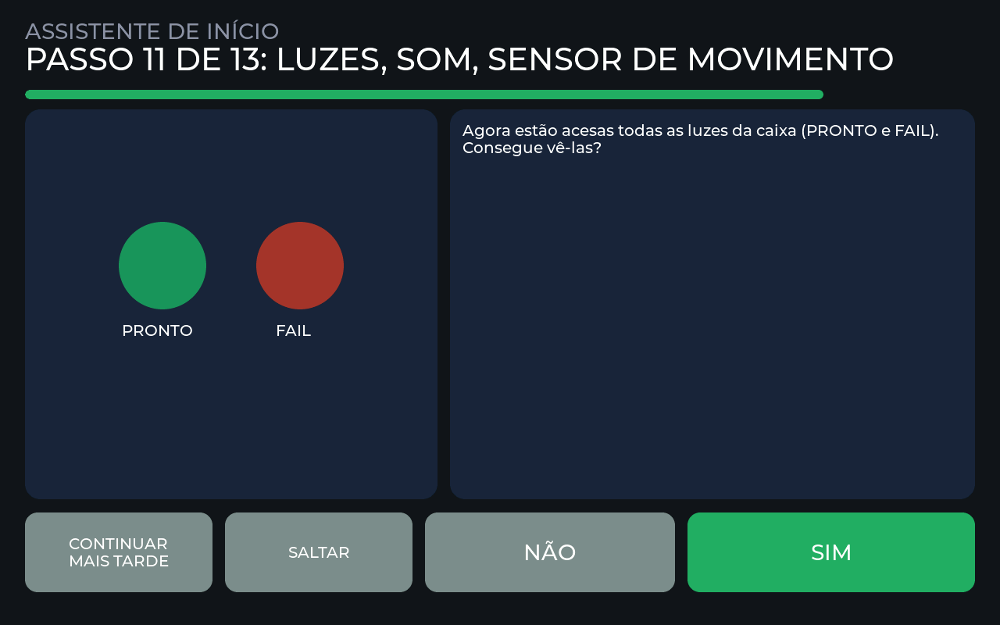
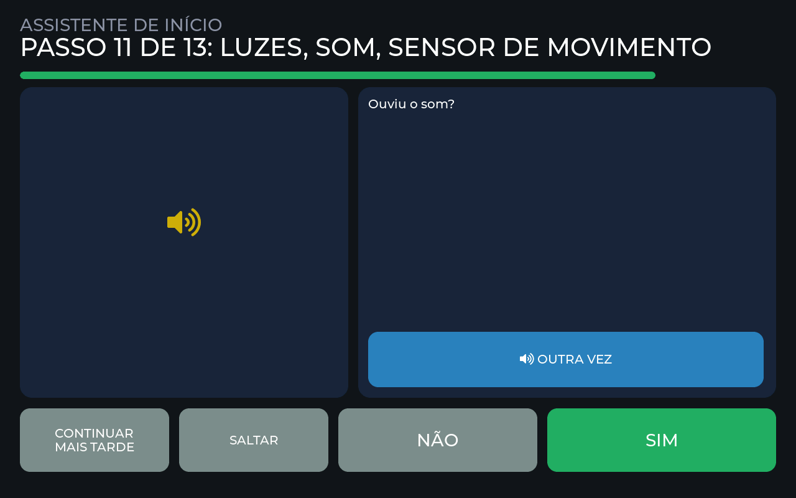
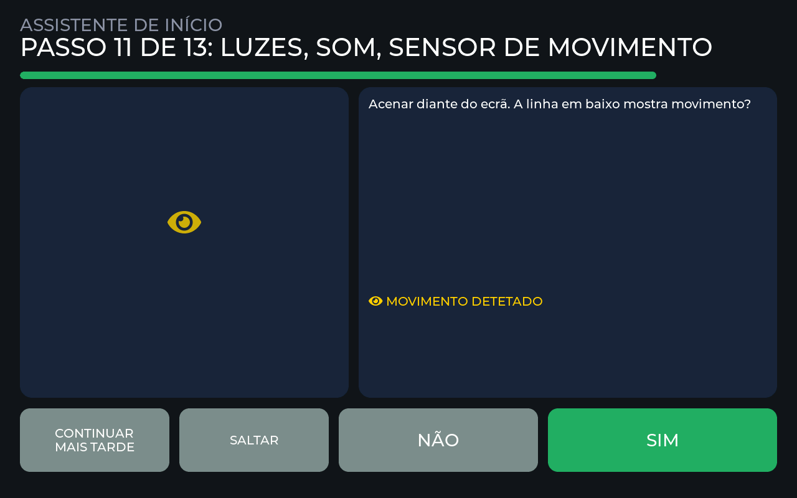
Três perguntas, uma a seguir à outra: luzes, som, sensor de movimento.
INICIAR, depois em cada uma SIM ou NÃO. Ou SALTAR.
BEREIT e FAIL acendem-se na caixa e na placa; o som ouve-se; ao acenar aparece «MOVIMENTO DETETADO».
NÃO fica registado no relatório de teste, mas o passo continua. Luzes: verificar a ligação das luzes da caixa (manual de cablagem, só em alemão). Som: volume. Movimento: há luz suficiente diante do ecrã?
12Teste do automático
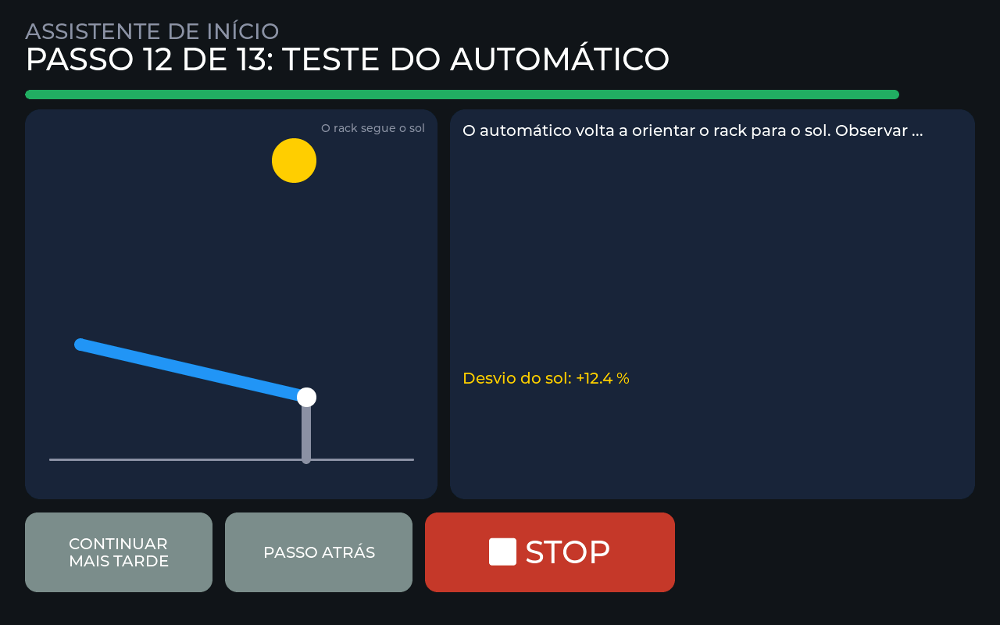
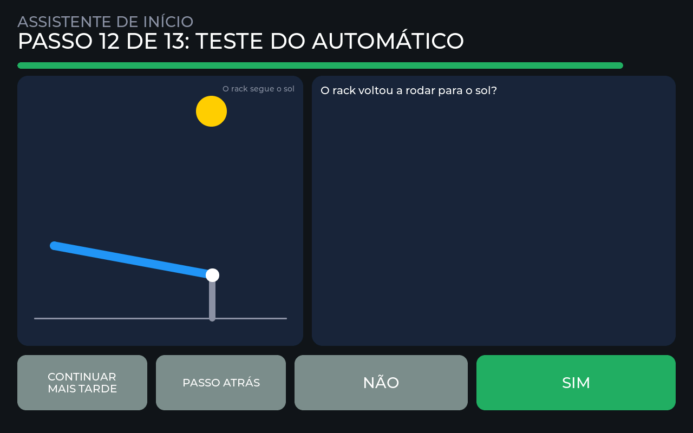
Explicação, depois «Desvia um pouco o rack …», depois o automático em curso com o desvio em percentagem.
INICIAR, observar, SIM ou NÃO. 2 eixos primeiro a inclinação, depois a rotação.
O aparelho desvia o eixo durante cerca de 4 s, depois o automático volta para o sol e para. «O teste foi aprovado.»
Se o automático se afastar do sol, o aparelho troca o sentido sozinho («O sentido foi trocado. Outra vez, por favor.»): na inclinação «Norte mais claro = SUBIR», na rotação troca as entradas este e oeste. «O automático não alinhou. Há sol suficiente?»: após 3 min sem êxito; repetir com sol.
13Concluído
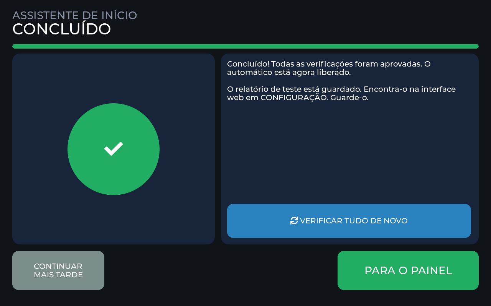
Um visto verde, PARA O PAINEL e a tecla VERIFICAR TUDO DE NOVO.
PARA O PAINEL. Ligar o interruptor do automático em cima, se estiver desligado.
A faixa violeta desapareceu. A faixa de estado mostra o automático (por exemplo «AUTO: ALINHADO»).
Ainda falta um passo obrigatório: «Este passo ainda falta.» Voltar a esse passo.
5.4 Depois da conclusão
- Relatório de teste: o aparelho guarda os três últimos relatórios. Na interface web em CONFIGURAÇÃO → ASSISTENTE DE INÍCIO, VER mostra o relatório como folha com design (clara para a impressora, escura para um ficheiro) com a tecla GUARDAR COMO PDF; TEXTO descarrega-o como ficheiro de texto (desde a firmware 0.7.6; relatórios mais antigos só como texto). Contém data, firmware, modo de operação, anemómetro, cada passo com o resultado e os valores medidos (tempos de curso, passos Hall, ângulo lido, atribuição do sensor solar, respostas sobre luzes, som e sensor de movimento). Guarde-o: ajuda em verificações e consultas posteriores.
- Valores individuais continuam alteráveis em VALORES (capítulo 7); CALIBRAR TEMPO DE CURSO pode ser repetido aí a qualquer momento 1 eixo.
- Verificar tudo de novo: depois da troca de uma peça (atuador, sensor, anemómetro, placa) ou depois de alterar o modo de operação: VALORES → ENTRADA EM SERVIÇO → ASSISTENTE DE INÍCIO (VERIFICAR TUDO) abre o ecrã «Concluído»; aí VERIFICAR TUDO DE NOVO e, no pedido de confirmação, RECOMEÇAR. O assistente começa no passo 1. Até todos os passos estarem de novo aprovados, o automático fica bloqueado; a proteção contra tempestade e o estacionamento continuam a atuar. O relatório de teste anterior fica guardado. Um assistente de início concluído apenas na simulação recomeça sozinho no rack real (4.10).
6Local, orientação, sol e noite
Se o aparelho conhecer a hora (pelo Wi-Fi) e o local, calcula o percurso do sol: nascer do sol, pôr do sol, altura e direção do sol. Assim vai pontualmente para a posição noturna. Durante o dia, o seguimento continua a ser feito pelo sensor solar.
O cálculo da posição do sol foi testado com valores de comparação de uma biblioteca astronómica. No aparelho, com hora real e rack real, ainda não foi experimentado.
6.1 A página SOL
No dashboard, no cartão SENSOR SOLAR, há em cima um pequeno campo amarelo com o nascer e o pôr do sol, por exemplo «↑ 04:50 ↓ 21:23». Tocar abre a página SOL. Ao abrir, o sol percorre numa breve animação o caminho do nascer até à posição atual.
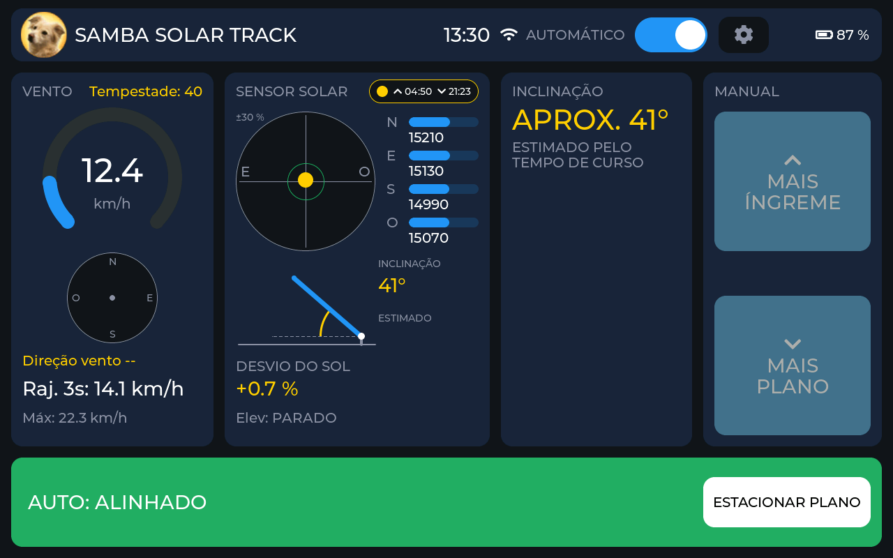
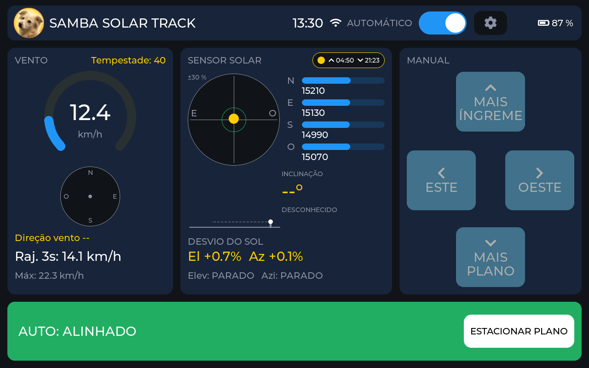
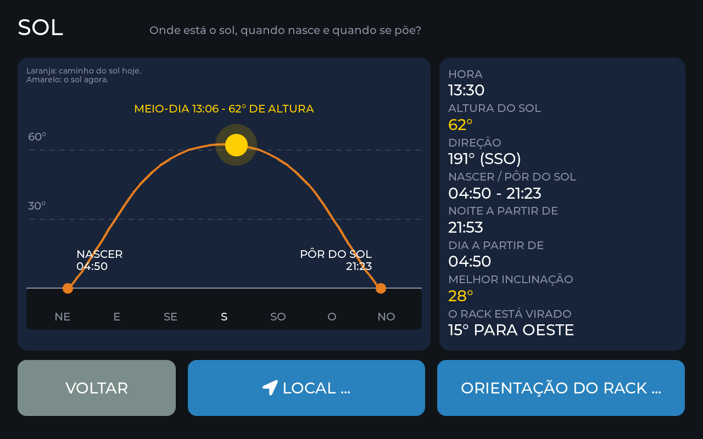
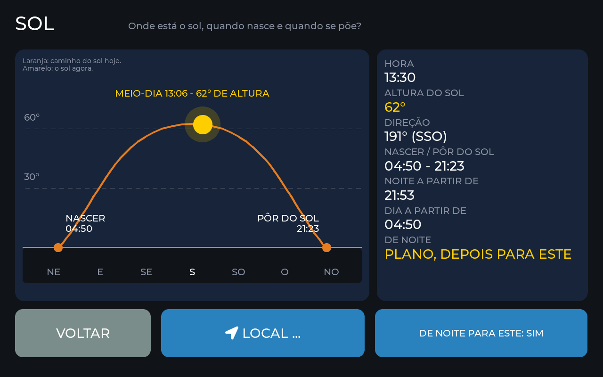
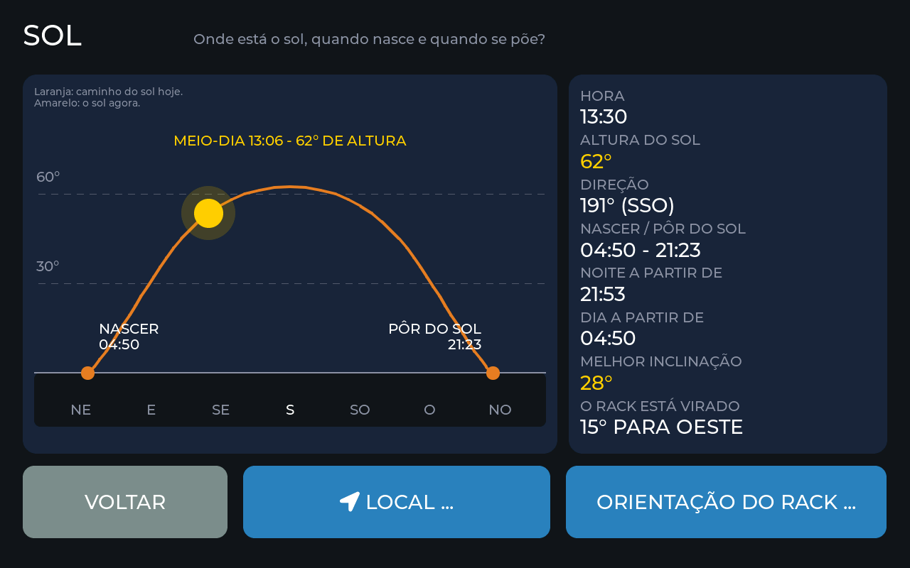
| Indicação | Significado |
|---|---|
| Linha laranja | Caminho do sol hoje pelo céu, de nordeste, passando por sul, até noroeste (no verão). Ponto amarelo: o sol agora. |
| MEIO-DIA | Hora e altura da posição mais alta do sol. |
| ALTURA DO SOL, DIREÇÃO | A que altura (em graus acima do horizonte) e em que direção está o sol agora. |
| NASCER / PÔR DO SOL | Hoje, para o seu local. |
| NOITE A PARTIR DE, DIA A PARTIR DE | Quando o aparelho vai para a posição noturna e quando começa o dia (com os desvios de 6.4). |
| MELHOR INCLINAÇÃO 1 eixo | Que inclinação capta agora mais sol, tendo em conta a orientação do rack. |
| O RACK ESTÁ VIRADO 1 eixo | A orientação definida (6.3). |
| DE NOITE 2 eixos | Posição noturna: «PLANO, DEPOIS PARA ESTE» ou só plano. A tecla DE NOITE PARA ESTE alterna. |
6.2 Introduzir o local
Chega ao local pela tecla LOCAL … na página SOL ou no assistente de início (passo 10). Para a posição do sol basta uma precisão de cerca de 0,1° (cerca de 10 km): a localidade mais próxima é suficiente.
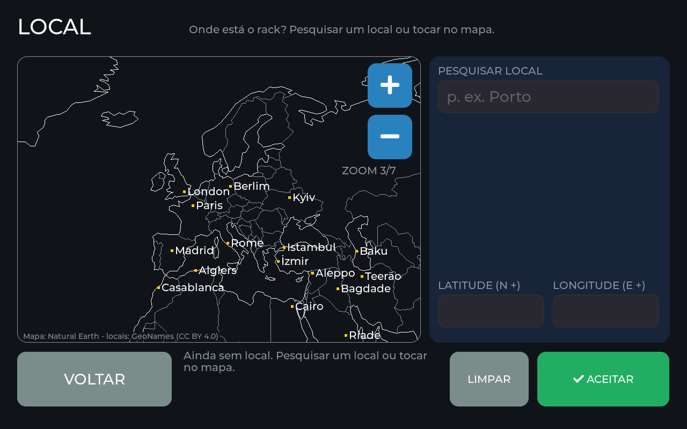
- Pesquisar o local ou tocar no mapaNo campo PESQUISAR LOCAL, escreva as primeiras letras da sua localidade e toque numa sugestão. Ou amplie o mapa com + e −, desloque-o com o dedo e toque na sua localidade. Resultado: a latitude e a longitude aparecem nos campos.
- Verificar ou introduzir os númerosQuem conhece as coordenadas (por exemplo de uma aplicação de mapas) introdu-las diretamente: LATITUDE (N +), LONGITUDE (E +), em graus decimais com ponto, por exemplo 51.0504 e 13.7373. A sul do equador a latitude é negativa, a oeste de Greenwich a longitude. Resultado: os números estão certos.
- ACEITARResultado: o ponto vermelho fica na sua localidade; a página SOL mostra as horas para o seu local.
De fábrica, ambas estão em 0. LIMPAR repõe o local em «não introduzido». O mapa no ecrã está guardado no aparelho e não precisa de internet (contornos de Natural Earth, localidades de GeoNames). Na interface web há ainda um mapa de ruas (capítulo 8).
6.3 Orientação do rack 1 eixo
Um rack com um eixo não pode rodar. Se não estiver virado exatamente para sul, o sol fica «à frente» do rack a outras horas. Para que o aparelho calcule corretamente, indique-lhe para onde o seu rack está virado. Com dois eixos este valor não existe, porque o azimute segue o sol de qualquer forma.
- Medir a direçãoCom uma bússola (uma aplicação no telemóvel também serve), medir atrás do rack, na direção para onde olham os painéis. Não encostar a bússola diretamente ao metal. Resultado: um ponto cardeal, por exemplo 195° (sul-sudoeste).
- Converter no valorValor = direção da bússola − 180. Exemplo: 195° − 180 = +15. Com 165° (sul-sudeste) obtém-se −15. Resultado: um número entre −90 e +90.
- DefinirPágina SOL → ORIENTAÇÃO DO RACK ..., ajustar com 5° ESTE, 1° ESTE, 1° OESTE, 5° OESTE, ACEITAR. Resultado: a página SOL mostra «O RACK ESTÁ VIRADO 15° PARA OESTE».
O valor depende apenas de como o rack foi instalado. Não há predefinição para o rack além de 0 (sul exato). Alguns graus de desvio da bússola não têm importância.
Se faltar a hora ou o local
O controlador funciona mesmo assim por completo: reconhece então a noite pela luminosidade, e o seguimento segue como sempre o sensor solar.
6.4 Noite e posição noturna
| O que o aparelho sabe | A noite começa | O dia começa |
|---|---|---|
| Hora e local | Pôr do sol + «Noite a partir do pôr do sol mais» (de fábrica 30 min), sem tempo de espera | Nascer do sol − «Dia a partir do nascer do sol menos» (de fábrica 0 min) |
| Falta a hora ou o local | Luminosidade (soma dos quatro lados) durante «Noite ou dia só após» (de fábrica 5 min) abaixo de «Noite abaixo de luminosidade» (de fábrica 4000) | durante o mesmo tempo acima de «Dia acima de luminosidade» (de fábrica 6000) |
1 eixo Posição noturna
A elevação vai para plano (posição 0) e fica assim até de manhã.
2 eixos Posição noturna
Primeiro a elevação vai para plano, depois o azimute roda para este (posição matinal), se «À noite voltar para este» estiver ligado (de fábrica ligado). Caso contrário, o azimute fica parado. Os dois eixos nunca se movem ao mesmo tempo.
O movimento noturno é um movimento normal com todas as funções de proteção; por exemplo, espera pelo fim de uma pausa do ciclo de trabalho. Tempestade, estacionamento e modo manual têm prioridade.
6.5 Com nuvens, ir para o ângulo calculado 1 eixo desligado de fábrica
Com nuvens densas, o sensor solar não vê nenhuma direção. Se este interruptor estiver ligado, a elevação vai então para o melhor ângulo calculado (como na inclinação por comando), e a faixa de estado mostra «NUBLADO: ...». Requisitos: hora, local e um tempo de curso calibrado. «Nublado» significa: a soma da luminosidade fica durante 5 min abaixo de «Nublado abaixo da luminosidade» (de fábrica 20000); volta a estar sol acima de 1,25 vezes esse valor. O aparelho só vai para um novo alvo quando este difere pelo menos 3° do anterior.
O limiar 20000 é uma estimativa. Num dia encoberto, observe a luminosidade no cartão SENSOR SOLAR (soma dos quatro valores) e defina o limiar um pouco acima (capítulo 7).
7Todos os valores ajustáveis
A parte de consulta: cada valor em VALORES com significado, predefinição, limites e quando se aplica. Para cada um, uma recomendação para o Samba-Solar-Rack e uma indicação de como encontrar o valor certo noutra instalação. Todos os valores numa vista: anexo A.
As recomendações para o rack provêm da descrição do projeto (README) e referem-se ao Rack 2.0-E Plus com controlador síncrono BST-KZQ-15A-2 e sem fins de curso no tracker. Devem ser verificadas com a versão atual do manual de montagem no website. Onde falta um dado, consta «medir no próprio rack» ou «predefinição»; medidas e tempos não são estimados aqui.
Como alterar um valor
- Roda dentada → VALORES ...A tecla só existe depois de a configuração estar guardada. Resultado: aparece a lista do grupo REGULAÇÃO.
- Escolher o grupoREGULAÇÃO, ENTRADA EM SERVIÇO, SEGURANÇA ou DIAGNÓSTICO. Para percorrer, deslizar a lista. Resultado: aparecem os valores do grupo; os escritos a amarelo diferem da predefinição.
- Tocar na linha, ajustar o valor, aceitarResultado: a linha mostra o novo valor. Se estiver fora dos limites ou não for compatível com outro valor, o aparelho recusa-o e diz porquê.
| «Aplica-se» | Significado |
|---|---|
| de imediato | O novo valor atua no passo de regulação seguinte. |
| só com os atuadores parados | A alteração é recusada enquanto um atuador estiver em movimento. Esperar um pouco ou esperar pelo fim de ESTACIONAR PLANO e tentar de novo. |
| no ecrã de imediato; à distância só após confirmação | Se o valor vier do browser ou do ioBroker, o ecrã mostra uma pergunta com o valor antigo e o novo. Só ACEITAR o torna válido. As propostas não sobrevivem a um reinício. |
Só uma parte dos valores aparece em cada instalação: valores do azimute só com 2 eixos; tempos de curso, estrutura, leitura Hall, ângulos fixos, orientação e nuvens só com 1 eixo; valores da direção do vento só com anemómetro com direção. As marcas indicam isso.
SEGURANÇA
Os valores de segurança protegem a mecânica e os atuadores. Os seus limites são fixos. Se for alterado à distância, um novo valor só se aplica quando o confirmar no ecrã (o ecrã mostra o valor antigo e o novo).
Limiar tempestade (rajada) ambos stormKmh
A partir desta velocidade do vento, o rack vai para plano. É medida a rajada: a média ao longo de 3 segundos.
Espera após tempestade ambos stormHoldMs
Durante este tempo, o rack fica plano após a última rajada acima do limiar de tempestade. Cada nova rajada reinicia o tempo.
Tempo morto na inversão de sentido ambos motorDeadtimeMs
Pausa antes de um atuador poder mudar de sentido. Poupa o motor e a engrenagem.
Tempo máx. de curso elevação ambos motorMaxRunMsElevation
Movimento contínuo mais longo permitido. Com fins de curso: se for excedido, o controlador assinala uma falha do atuador. Sem fins de curso: quando termina, o limite considera-se atingido (limite por tempo de curso).
Tempo máx. de curso azimute 2 eixos motorMaxRunMsAzimuth
Como acima, para a rotação este – oeste.
ENTRADA EM SERVIÇO
O que está instalado no seu rack e como. A maioria destes valores é definida pelo próprio assistente de início. Valores «só com os atuadores parados» são recusados pelo aparelho enquanto um atuador estiver em movimento.
Fim de curso elevação instalado ambos limitSwitchesElevation
Sim: na placa estão ligados fins de curso (normalmente fechados) para as duas extremidades da inclinação. Não: o atuador para no seu próprio fim de curso integrado; o controlador reconhece o fim pelo tempo máximo de curso.
Fim de curso azimute instalado 2 eixos limitSwitchesAzimuth
Como acima, para a rotação.
Sensor solar ESTE / OESTE / SUL / NORTE na entrada AIN ambos sunChEast, sunChWest, sunChSouth, sunChNorth
Que fio do sensor solar está em que entrada. Se um lado receber uma entrada que outro já tem, os dois trocam.
Norte mais claro = SUBIR ambos sunNorthMeansUp
Define em que sentido a inclinação se move quando o lado NORTE do sensor está mais claro que o SUL. Depende de como o sensor está montado (pressuposto de fábrica: NORTE aponta para o bordo superior do módulo).
A posição plana fica no sentido SUBIR ambos stormParkElevationPlus
Em que sentido (contacto SUBIR ou DESCER) o rack fica plano. Determina o movimento em tempestade, estacionamento e noite, e que terminal as teclas MAIS ÍNGREME e MAIS PLANO comutam.
Anemómetro: taxa de baud ambos windBaud
Velocidade de transmissão na linha RS485 (8 bits de dados, sem paridade, 1 bit de paragem).
Anemómetro: endereço Modbus ambos windSpeedAddr
Endereço do medidor de velocidade do vento no bus.
Anemómetro: comando de leitura (3 ou 4) ambos windSpeedFunction
Comando Modbus de leitura: 3 (holding register) ou 4 (input register).
Anemómetro: registo ambos windSpeedRegister
Número do registo onde está a velocidade do vento.
Anemómetro: m/s por contagem ambos windSpeedScale
Conversão do valor bruto em m/s. 0,1 significa: o sensor fornece décimas de m/s (valor bruto 86 = 8,6 m/s).
Direção vento: endereço Modbus, comando de leitura, registo, ° por contagem ambos windDirAddr, windDirFunction, windDirRegister, windDirScale
Os mesmos dados para o sensor de direção (só com anemómetro com direção do vento). 0,1 grau por contagem: valor bruto 0 a 3600 = 0° a 360°.
Tempo de curso 0 a 60° (mais íngreme) / 60 a 0° (mais plano) 1 eixo elevTravelSteepMs, elevTravelFlatMs
Quanto tempo a inclinação demora em todo o percurso. A partir disso, o aparelho estima cada ângulo (inclinação por comando). Só se aplica se for inferior a 0,9 × tempo máximo de curso.
Estrutura (inclinação pelo curso) 1 eixo elevGeometry
Como o percurso do atuador se converte num ângulo. G1 e G2 são as tabelas dos Samba-Solar-Racks (manual de montagem, anexo 16.1).
Perda de arranque por movimento 1 eixo elevStartLossMs
Tempo que cada atuador perde ao arrancar e ao parar. Melhora a estimativa com muitos movimentos curtos.
Leitura Hall presente 1 eixo elevHall
Sim: o HallTapBoard passa os impulsos do atuador para a placa (entrada J22). Então o aparelho mede a inclinação em vez de a estimar e reconhece se o atuador se está realmente a mover. Com dois eixos fica desligado.
Inverter sentido de contagem Hall 1 eixo elevHallInvert
Inverte o sentido de contagem quando os canais A e B estão ligados ao contrário.
Passos Hall por curso 1 eixo elevHallSteps
Quantos passos Hall o atuador conta em todo o percurso. A calibração introduz o valor (média de SUBIDA e DESCIDA).
Reset controlador síncrono elevação ambos syncResetElevation
Se e onde está ligada a entrada de reset (RST) de um controlador síncrono. Alguns controladores síncronos bloqueiam após um corte de energia durante um movimento, até que RST seja ligado brevemente a COM; depois recolhem totalmente os atuadores.
Reset controlador síncrono azimute 2 eixos syncResetAzimuth
Como acima, para a rotação (terminal J23, polos 3–4).
Local: latitude (norte positivo) / longitude (este positivo) ambos siteLatitude, siteLongitude
Onde está o rack. Para o nascer e o pôr do sol. O mais cómodo é pelo mapa (capítulo 6.2).
Orientação do rack (sul 0, oeste positivo) 1 eixo rackAzimuth
Para onde olham os painéis (capítulo 6.3).
REGULAÇÃO
Como o automático faz o seguimento e quando é noite. Todos os valores se aplicam de imediato.
Seguir a partir de desvio ambos trackStartPermille
Só quando o sensor solar vê entre dois lados uma diferença maior do que esta começa um movimento de seguimento.
Alinhado abaixo do desvio ambos trackStopPermille
Abaixo desta diferença, o eixo considera-se alinhado e o movimento termina.
Espera antes de mover ambos trackStartDelayMs
Durante este tempo, o desvio tem de persistir antes de haver movimento. Evita movimentos por causa de uma nuvem passageira.
Repouso após movimento ambos trackSettleMs
Pausa após cada movimento de seguimento.
Movimento máx. de seguimento ambos trackMaxMoveMs
Um único movimento de seguimento termina, o mais tardar, após este tempo.
Noite abaixo de luminosidade (soma) ambos nightEnterLevel
Só sem hora ou local: se a soma das quatro luminosidades ficar abaixo deste valor durante esse tempo, é noite.
Dia acima de luminosidade (soma) ambos nightExitLevel
Acima deste valor volta a ser dia. Aplica-se também como luminosidade mínima para o sensor solar e o teste no assistente de início.
Noite ou dia só após ambos nightDelayMs
Durante este tempo, a luminosidade tem de ficar abaixo ou acima do limiar. Aplica-se também a «nublado».
À noite voltar para este 2 eixos nightReturnEast
Sim: à noite, o azimute roda para este após ir para plano, para que a instalação esteja pronta de manhã.
Noite a partir do pôr do sol mais ambos nightAfterSunsetMin
Com hora e local: a noite começa este número de minutos após o pôr do sol.
Dia a partir do nascer do sol menos ambos dayBeforeSunriseMin
A noite termina este número de minutos antes do nascer do sol.
Com nuvens, ir para o ângulo calculado 1 eixo cloudAstro
Com nuvens, a inclinação vai para o melhor ângulo calculado (capítulo 6.5).
Nublado abaixo da luminosidade (soma) 1 eixo cloudLevel
Abaixo desta soma considera-se nublado (pressuposto, ajustar no aparelho).
Ângulo fixo 1 / ângulo fixo 2 1 eixo elevPreset1, elevPreset2
Até dois ângulos próprios como teclas adicionais no cartão INCLINAÇÃO (ao lado de 0°, 30°, 60°).
DIAGNÓSTICO
Apenas para a resolução de problemas.
Nível de log (0 desl., 5 tudo) ambos logLevel
Com que detalhe o aparelho regista (0 desl., 1 erros, 2 avisos, 3 info, 4 debug, 5 tudo).
Valores fixos que não pode ajustar
Alguns valores de proteção estão fixos no firmware. Convém conhecê-los, porque explicam porque é que o rack às vezes espera.
| Proteção | Valor | O que nota |
|---|---|---|
| Ciclo de trabalho: movimento contínuo | no máximo 120 s | Quando a conta de tempo de curso de um atuador fica vazia, começa uma pausa. A faixa de estado mostra a laranja «PAUSA CICLO DE TRABALHO: ATUADOR LIVRE EM mm:ss». Após esvaziamento total, dura cerca de 13,5 min. Só o movimento para plano em tempestade, falha do anemómetro e estacionamento se faz mesmo assim. |
| Ciclo de trabalho: percentagem | 10 %; livre de novo a partir de 90 s acumulados na conta (pressuposto) | |
| Novo movimento para plano em tempestade (sem fins de curso) | a cada 30 min | Em tempestade e falha do anemómetro, a elevação volta regularmente a ir para plano, caso um movimento anterior não tenha tido efeito. |
| Movimento de teste no assistente de início | no máximo 5 s | O movimento de teste MAIS PLANO ou ESTE para sozinho. |
Os valores do ciclo de trabalho são dados do revendedor para os atuadores do Samba-Solar-Rack (10 % de ciclo de trabalho, 120 s contínuos). Outros atuadores podem suportar mais ou menos; no firmware 0.7.0 isto não é ajustável.
8Interface web: ajustar à distância
Com o Wi-Fi ligado, pode ver, comandar e ajustar a instalação no browser do telemóvel ou do PC. A página tem o aspeto do ecrã. Mas o ecrã continua a ser o aparelho principal: tudo o que existe à distância existe também no ecrã, e algumas coisas só existem lá.
Ver e atualizar pela rede foram testados no board de teste (em simulação, sem placa). Comandar e ajustar à distância ainda não foram testados aí; mapa do local, sol e relatório de teste são novos na 0.7.0 e só foram verificados no PC.
Abrir e iniciar sessão
- Abrir o endereçoNa mesma rede Wi-Fi, escrever no browser o endereço do ecrã REDE, ou
http://samba-solar-track.local. Resultado: aparece a vista geral; sem sessão iniciada, em cima consta «SÓ VISUALIZAÇÃO». - Iniciar sessãoNo telemóvel, ler o código QR em REDE → ACESSO REMOTO. No PC, INTRODUZIR TOKEN e escrever os quatro blocos do token que o ecrã REDE mostra. Resultado: o browser pode comandar e ajustar; memoriza a sessão.
O que é possível à distância
| Página | Ajuste | Como atua |
|---|---|---|
| CONFIGURAÇÃO | Idioma, design | de imediato, no ecrã e no browser; só enquanto o dashboard estiver aberto no ecrã |
| CONFIGURAÇÃO | Modo de operação, anemómetro | como GUARDAR no ecrã: os atuadores param, reinício após 1,5 s |
| CONFIGURAÇÃO | Local (mapa), orientação do rack 1 eixo | de imediato |
| CONFIGURAÇÃO | Assistente de início: estado e relatórios de teste (cada um VER, guardar como PDF, e TEXTO) | só ver, guardar e descarregar |
| CONFIGURAÇÃO | Instalar firmware ou instalar a partir da Internet; terminar a simulação | com token; não em tempestade e não enquanto um atuador estiver em movimento |
| VALORES | todos os valores do capítulo 7 | Regulação e entrada em serviço de imediato ou com os atuadores parados; valores de segurança, sentido da posição plana e dados da velocidade do vento só após confirmação no ecrã |
| VALORES | REINICIAR O CONTROLADOR SÍNCRONO | com pergunta de confirmação no browser |
Local e orientação no browser
No browser há um mapa de ruas (Leaflet com mapas do OpenStreetMap) e uma pesquisa de locais (Nominatim). As imagens do mapa são carregadas da Internet pelo seu browser, não pelo aparelho; sem Internet, os campos numéricos funcionam na mesma.
O que só é possível no ecrã, e porquê
| Só no ecrã | Porquê |
|---|---|
| Percorrer o assistente de início | Em cada movimento de teste, alguém tem de estar junto ao rack a observar. O browser mostra apenas o progresso. |
| CALIBRAR TEMPO DE CURSO 1 eixo | Mesmo motivo: toca em CHEGOU quando a estrutura para. Durante a calibração, o aparelho recusa movimentos manuais à distância. |
| Confirmar valores de segurança | Um valor que protege a mecânica não deve ser alterado à distância sem que se dê por isso. |
| Nome e senha do Wi-Fi | Sem Wi-Fi não há browser. Em alternativa, através do hotspot de configuração (4.4). |
| Código QR, mostrar token, RENOVAR TOKEN, bloquear COMANDO REMOTO | Quem está junto ao aparelho decide quem pode comandar à distância. |
| Ligar a simulação | Requer uma confirmação no aparelho e só funciona sem placa. |
| Som, ecrã (repouso, detetor de movimento, bateria) | Diz respeito apenas ao próprio aparelho. |
Bloqueado, o aparelho não aceita à distância nenhum comando, nenhuma alteração e nenhuma atualização de firmware. Indicações e mensagens continuam. Proteção contra tempestade, fins de curso, tempo morto e vigilância do tempo de curso nunca podem ser anulados à distância.
9Resolução de problemas na configuração
As mensagens e observações mais frequentes durante a configuração, com causa e solução. Os erros de cablagem são tratados no manual de cablagem (só em alemão), os erros da placa no manual de instalação e utilização.
| Indicação ou observação | Causa | Solução |
|---|---|---|
| Tudo em inglês | De fábrica, o idioma é o inglês. | Na escolha do idioma, tocar em PORTUGUÊS (4.1). |
| Não é possível tocar em GUARDAR + REINICIAR | Modo de operação ou anemómetro não escolhido. | Escolher ambos. |
| Falta a tecla VALORES | Configuração ainda não guardada. | Primeiro GUARDAR + REINICIAR. |
| PRONTO pisca, nada se move | Falta a configuração. | Guardar a configuração. |
| Faixa violeta «FALTA O ASSISTENTE DE INÍCIO: AUTOMÁTICO BLOQUEADO» | Assistente de início não concluído. | Tocar na faixa e continuar (capítulo 5). |
| Depois de encaixar a placa: faixa violeta «FALTA O ASSISTENTE DE INÍCIO», embora o assistente de início estivesse concluído | Só foi concluído na simulação. No rack real, recomeça então sozinho. | Intencional. Percorrer o assistente de início no rack (capítulo 5). |
| «SIMULAÇÃO IMPOSSÍVEL» | A placa RearCircuitBoard_10 está encaixada. | Com placa não há simulação; isto é intencional. |
| Passo 3: campo 0x70 vermelho | A placa não está bem encaixada, componente com falha. | Desligar a alimentação, verificar a placa na barra de terminais fêmea J8. Sem 0x70 nada se move. |
| Passo 3: 24 V ou 5 V vermelho | Fonte de alimentação do controlador desligada, fusível, conversor. | Verificar a fonte de alimentação e o fusível (manual de cablagem, só em alemão). |
| Passo 3: BAT. vermelho | Bloqueio de carga não plausível. | Manual de instalação e utilização, capítulo 7. |
| Passo 3: 0x72 vermelho | Reset em J23 escolhido, o componente não responde (placa anterior ao projeto 0.12?). | No passo 2, definir o reset como «desl.» ou verificar a placa. |
| «O anemómetro ainda não foi rodado.» | A indicação subiu menos de 2 km/h, ou o anemómetro não responde. | Rodar com mais força. Se não responder: linha RS485 (A/B trocados?), alimentação, endereço e taxa de baud. |
| A direção do vento não mostra o norte | Sensor montado rodado ou valores errados. | Alinhar a marca norte do sensor, verificar os valores da direção do vento, REPETIR. |
| Com MAIS PLANO, o rack ficou mais íngreme | Sentido da posição plana ao contrário. | Tocar em NÃO: o aparelho altera. REPETIR. |
| Com MAIS PLANO nada se move | Fonte de alimentação dos atuadores desligada, contactos não ligados, controlador síncrono não em modo momentâneo ou bloqueado (por exemplo após corte de energia). | Verificar a cablagem; com controlador síncrono com reset: definir e acionar o reset. |
| «Avaria do motor (tempo máx.). Confirmar e repetir.» | Com «Fim de curso instalado = sim», o fim de curso não atuou antes de terminar o tempo máximo de curso. | Há fim de curso? Se não, definir como não. Se sim, aumentar o tempo máximo de curso. CONFIRMAR, REPETIR. |
| Ambos os sentidos bloqueados, nada se move | «Fim de curso instalado = sim», mas sem fins de curso ligados (entrada aberta = limite). | Definir como não (fim de curso). |
| «Motor parado sem fim de curso (sensor Hall).» | Os impulsos Hall pararam a meio do percurso: mecânica presa, atuador sem tensão, controlador síncrono interrompeu. | Verificar a mecânica e a alimentação dos atuadores, REPETIR. |
| «O tempo de curso ainda não está calibrado.» | CALIBRAR TEMPO DE CURSO não concluído. | Calibrar e ACEITAR. |
| Calibração: «TEMPO MÁXIMO CURTO DEMAIS OU CHEGOU NÃO TOCADO» | O movimento demorou mais que o tempo máximo de curso, ou esqueceu-se de CHEGOU. | Aumentar o tempo máximo de curso, medir de novo. |
| Calibração: «HALL CONTA AO CONTRÁRIO» | Canais A e B trocados. | Inverter sentido de contagem Hall = sim. |
| Com ESTE, o rack roda para oeste | Contactos ESTE e OESTE trocados. | Desligar a fonte, trocar as fichas em J5 e J6, REPETIR. |
| «Reset impossível (verificar ligação ou chip).» | O reset não começou dentro de 20 s. | Verificar o terminal e a configuração do reset. |
| «Demasiado escuro: ... repetir.» | Luminosidade abaixo do limiar de dia. | Com luz do dia ou com uma lâmpada forte à frente do sensor. |
| Sensor solar: lado não reconhecido | Sombra pequena demais (menos de 25 % mais escuro) ou só breve. | Mão mais perto, sombra sobre todo o lado, manter 1 s. |
| «Ainda sem hora: configurar o WiFi ou saltar.» | Wi-Fi desligado ou servidor de hora inacessível. | Configurar o Wi-Fi (4.4) ou SALTAR. |
| Hora errada em uma ou mais horas | Fuso horário errado. | REDE → HORA → SUGESTÕES. |
| «Ainda sem local: introduzir ou saltar.» | Latitude e longitude são 0. | Introduzir o local (6.2). |
| O nascer e o pôr do sol não correspondem ao seu local | Latitude e longitude trocadas ou sinal errado. | Latitude = norte, longitude = este; verificar. |
| Teste: «O sentido foi alterado. Mais uma vez, por favor.» | O automático afastou-se do sol. | REPETIR; o aparelho já corrigiu o valor. |
| «O automático não alinhou. Há sol suficiente?» | Não alinhado após 3 min. | Repetir com sol; sensor livre de sombras? |
| «Tempestade: o rack fica plano. Repetir depois.» | Rajada acima do limiar de tempestade. | Esperar pelo fim da tempestade e do tempo de espera, REPETIR. |
| Laranja «PAUSA CICLO DE TRABALHO ...» | Conta de tempo de curso do atuador vazia. | Esperar; o tempo restante é indicado (capítulo 7). |
| O valor é recusado | Fora dos limites, incompatível com outro valor, ou um atuador está em movimento. | Ler o motivo; com «só com os atuadores parados», esperar um pouco. |
| Browser: a alteração não é aceite | Sessão não iniciada, COMANDO REMOTO bloqueado, ou o dashboard não está aberto no ecrã (idioma, design). | Iniciar sessão, desbloquear no ecrã, voltar ao dashboard no ecrã. |
10Termos explicados de forma simples
- Eixo
- Uma direção em que o rack se pode mover. Elevação = inclinação, azimute = rotação.
- Automático
- O controlador orienta o rack sozinho para o sol, vai à noite para a posição noturna e de manhã volta. Interruptor AUTOMÁTICO na barra superior.
- Azimute
- A rotação de este para oeste, só com 2 eixos. Também: o ponto cardeal do sol em graus.
- Rajada
- Aqui: a média da velocidade do vento ao longo de 3 segundos. Se estiver acima do limiar de tempestade, considera-se tempestade.
- Graus decimais
- Forma de escrever latitude e longitude com casas decimais, por exemplo 51.0504 em vez de 51° 3′ 1″.
- Calibrar
- O aparelho mede o tempo de curso (e, com leitura Hall, os passos Hall) em todo o percurso da inclinação. Só com 1 eixo.
- Ciclo de trabalho
- Quanto tempo um atuador pode trabalhar em relação à pausa sem sobreaquecer. Aqui 10 % e no máximo 120 s contínuos.
- Configuração
- O ecrã com modo de operação e anemómetro. Sem configuração guardada, nenhum atuador se move.
- Elevação
- A inclinação do módulo entre plano e íngreme.
- Limite
- O fim do percurso num sentido.
- Fins de curso
- Um interruptor no fim do percurso que abre ao ser atingido (normalmente fechado, NC). Aberto significa para o controlador: sentido bloqueado.
- Posição plana
- A posição plana do módulo. Ao mesmo tempo posição de tempestade e posição noturna (posição 0).
- Estrutura G1, G2
- Os modelos dos Samba-Solar-Racks. Determinam como o percurso do atuador se converte num ângulo.
- Leitura Hall, passos Hall
- Muitos atuadores têm um sensor Hall que gera impulsos durante o movimento. O HallTapBoard encaminha-os para a placa. Um passo Hall é um flanco contado desses impulsos.
- Tempo de espera
- Durante este tempo, o rack fica plano após a última rajada de tempestade.
- Modo manual
- Automático desligado: o rack só se move enquanto mantiver premida uma tecla de movimento.
- Tempo máximo de curso
- Movimento contínuo mais longo permitido. Sem fins de curso, o controlador reconhece por ele o limite.
- Hotspot
- Uma rede Wi-Fi própria e temporária do aparelho, para introduzir os dados do Wi-Fi com o telemóvel.
- Limite por tempo de curso
- Sem fins de curso: após todo o tempo máximo de curso contínuo, o limite considera-se atingido.
- Modbus, RS485
- A forma como o anemómetro comunica com a placa através de dois fios. Cada sensor no bus tem um endereço.
- NTP, servidor de hora
- Um serviço na Internet do qual o aparelho obtém a hora exata.
- Posição 0
- A posição noturna: elevação plana.
- Teste
- Último passo de verificação do assistente de início: o automático tem de voltar a orientar para o sol o rack desajustado.
- Relatório de teste
- Relatório com todos os resultados e valores medidos do assistente de início, na interface web como folha com design (PDF) ou como ficheiro de texto; os três últimos ficam guardados no aparelho.
- Reset do controlador síncrono
- Um contacto breve entre RST e COM, com o qual alguns controladores síncronos se desbloqueiam após uma falha; ao fazê-lo, recolhem totalmente os atuadores.
- Assistente de início
- A verificação guiada de toda a instalação após a configuração. Só depois disso o automático fica livre.
- Simulação
- Funcionamento sem placa com rack simulado, só para experimentar.
- Sensor solar
- Um sensor com quatro lados (este, oeste, sul, norte). Pela diferença de luminosidade, o controlador reconhece onde está o sol.
- Limiar de tempestade
- Velocidade do vento a partir da qual o rack vai para plano.
- Controlador síncrono
- Um aparelho de comando que faz mover dois atuadores de um eixo exatamente à mesma velocidade (por exemplo BST-KZQ-15A-2). A placa «prime» as suas teclas.
- Token
- Chave secreta de 32 caracteres. Quem a tiver pode comandar à distância.
- Tempo morto
- Pausa antes de uma mudança de sentido.
- Interface web
- A página de comando no browser do telemóvel ou do PC, na rede Wi-Fi doméstica.
11Anexo
A. Todos os valores numa vista
Aplica-se: «de imediato», «paragem» = só com os atuadores parados, «confirmação¹» = no ecrã de imediato, à distância só após confirmação no ecrã. Eixos: 1 = só 1 eixo, 2 = só 2 eixos, 1+2 = ambos. Coluna Samba-Solar-Rack: forma abreviada, pormenores no capítulo 7. Pormenores e recomendações para outros racks: clicar nos nomes.
| Valor (ecrã) | Eixos | Predefinição | Permitido | Vale | Samba-Solar-Rack |
|---|---|---|---|---|---|
| SEGURANÇA | |||||
| Limiar tempestade (rajada) | 1+2 | 40 km/h | 20 a 60 km/h | Confirmação¹ | 40 km/h |
| Espera após tempestade | 1+2 | 10 min | 5 a 60 min | Confirmação¹ | 10 min |
| Tempo morto na inversão de sentido | 1+2 | 500 ms | 300 a 5000 ms | Confirmação¹ | 500 ms |
| Tempo máx. de curso elevação | 1+2 | 60 s | 5 a 300 s | Confirmação¹ | 90 s |
| Tempo máx. de curso azimute | 2 | 90 s | 5 a 300 s | Confirmação¹ | – |
| ENTRADA EM SERVIÇO | |||||
| Fim de curso elevação instalado | 1+2 | sim | sim / não | Paragem | não |
| Fim de curso azimute instalado | 2 | sim | sim / não | Paragem | – |
| Sensor solar ESTE / OESTE / SUL / NORTE na entrada AIN | 1+2 | ESTE AIN0, OESTE AIN1, SUL AIN2, NORTE AIN3 | AIN0 a AIN3, cada lado numa entrada diferente | Paragem | Assistente de início |
| Norte mais claro = SUBIR | 1+2 | sim | sim / não | Paragem | Assistente de início |
| A posição plana fica no sentido SUBIR | 1+2 | sim | sim / não | Confirmação¹ | Assistente de início |
| Anemómetro: taxa de baud | 1+2 | 9600 baud | 1200 a 115200 | Confirmação¹ | 9600 |
| Anemómetro: endereço Modbus | 1+2 | 3 | 1 a 247 | Confirmação¹ | 3 |
| Anemómetro: comando de leitura (3 ou 4) | 1+2 | 3 | 3 ou 4 | Confirmação¹ | 3 |
| Anemómetro: registo | 1+2 | 0 | 0 a 65535 | Confirmação¹ | 0 |
| Anemómetro: m/s por contagem | 1+2 | 0,1 | 0,001 a 10 | Confirmação¹ | 0,1 |
| Direção vento: endereço Modbus, comando de leitura, registo, ° por contagem | 1+2 | 4 · 3 · 0 · 0,1 | 1–247 · 3/4 · 0–65535 · 0,001–10 | de imediato | 4 · 3 · 0 · 0,1 |
| Tempo de curso 0 a 60° (mais íngreme) / 60 a 0° (mais plano) | 1 | 0 = não calibrado | 0 ou 10 a 300 s | Paragem | calibrar |
| Estrutura (inclinação pelo curso) | 1 | linear | linear · G1 (2.0-D, 2.0-E) · G2 (2.0-E Plus, 2.1, 2.1 Plus) | Paragem | G2 (2.0-E Plus) |
| Perda de arranque por movimento | 1 | 0 ms | 0 a 3000 ms | Paragem | 0 ms |
| Leitura Hall presente | 1 | não | sim / não | Paragem | sim com HallTapBoard |
| Inverter sentido de contagem Hall | 1 | não | sim / não | Paragem | não |
| Passos Hall por curso | 1 | 0 = não calibrado | 0 ou 1000 a 2000000 | Paragem | calibrar |
| Reset controlador síncrono elevação | 1+2 | desligado | desl. · J23 · J5 (J5 só com 1 eixo) | Paragem | J23 |
| Reset controlador síncrono azimute | 2 | desligado | desl. · J23 | Paragem | – |
| Local: latitude (norte positivo) / longitude (este positivo) | 1+2 | 0 / 0 = não introduzido | latitude −90 a 90, longitude −180 a 180 graus | de imediato | o seu local |
| Orientação do rack (sul 0, oeste positivo) | 1 | 0° | −90 a 90 graus, graus inteiros | de imediato | medir |
| REGULAÇÃO | |||||
| Seguir a partir de desvio | 1+2 | 8 % | 3 a 30 % | de imediato | Predefinição |
| Alinhado abaixo do desvio | 1+2 | 2 % | 0,5 a 10 %, sempre menor que «Seguir a partir de» | de imediato | Predefinição |
| Espera antes de mover | 1+2 | 3 s | 0 a 60 s | de imediato | Predefinição |
| Repouso após movimento | 1+2 | 15 s | 0 a 600 s | de imediato | Predefinição |
| Movimento máx. de seguimento | 1+2 | 20 s | 1 a 120 s | de imediato | Predefinição |
| Noite abaixo de luminosidade (soma) | 1+2 | 4000 | 0 a 100000 | de imediato | Predefinição |
| Dia acima de luminosidade (soma) | 1+2 | 6000 | 0 a 130000, sempre maior que o limiar da noite | de imediato | Predefinição |
| Noite ou dia só após | 1+2 | 5 min | 10 s a 60 min | de imediato | Predefinição |
| À noite voltar para este | 2 | sim | sim / não | de imediato | – |
| Noite a partir do pôr do sol mais | 1+2 | 30 min | 0 a 180 min | de imediato | Predefinição |
| Dia a partir do nascer do sol menos | 1+2 | 0 min | 0 a 180 min | de imediato | Predefinição |
| Com nuvens, ir para o ângulo calculado | 1 | não | sim / não | de imediato | conforme desejado |
| Nublado abaixo da luminosidade (soma) | 1 | 20000 | 0 a 130000 | de imediato | conforme desejado |
| Ângulo fixo 1 / ângulo fixo 2 | 1 | 0 = desl. | 0 ou 1 a 59°, não 30, não repetido | de imediato | conforme desejado |
| DIAGNÓSTICO | |||||
| Nível de log (0 desl., 5 tudo) | 1+2 | 4 | 0 a 5 | até reiniciar | Predefinição |
B. Os meus valores (para imprimir)
Registe aqui o que ajustou e mediu na sua instalação. Os valores medidos do assistente de início constam também do relatório de teste.
| Indicação | O meu valor | Data |
|---|---|---|
| Modo de operação (1 ou 2 eixos), anemómetro | ||
| Fim de curso elevação / azimute | ||
| Tempo máx. de curso elevação / azimute | ||
| Tempo de curso medido mais íngreme / mais plano | ||
| Tempo de curso este / oeste / regresso a este (2 eixos) | ||
| Passos Hall por curso | ||
| Ângulo lido a 30° (1 eixo) | ||
| Posição plana no sentido SUBIR (sim/não) | ||
| Local latitude / longitude | ||
| Orientação do rack (1 eixo) | ||
| Luminosidade (soma) ao crepúsculo / com nuvens | ||
| Nome do aparelho, endereço na rede Wi-Fi |
C. Pressupostos e pontos em aberto
| Ponto | Estado |
|---|---|
| Firmware 0.7.0 com assistente de início, posição do sol e local | testado apenas no PC e em simulação, não no rack |
| Limites do assistente de início (tempos de curso, passos Hall, ângulos) | nenhuns; serão definidos no rack após a entrega dos atuadores (E-S3) |
| Posição 0 = posição plana (sentido de tempestade) | Pressuposto para todas as variantes de atuadores |
| Posição de montagem do sensor solar (NORTE para o bordo superior) | Pressuposto; o assistente de início corrige o sentido |
| Limiar «nublado» 20000 | Pressuposto, ajustar no aparelho |
| Reset do controlador síncrono: impulso de 5 s, comportamento posterior | Pressuposto, medir no rack |
| Libertação do ciclo de trabalho após 90 s acumulados na conta | Pressuposto, verificar no rack |
| Tempo máximo de curso 90 s e estrutura G2 para o Rack 2.0-E Plus | do README; verificar com o manual de montagem atual |
| Estrutura «linear» para outros racks | Pressuposto |
D. Outros documentos
- Manual de instalação e utilização (
index.html): placa, sensores, firmware, utilização. - Manual de cablagem (
verkabelung.html, só em alemão): todas as ligações. - Manual de montagem do Samba-Solar-Rack: website e loja.
12Licença e copyright
Pode construir o Samba Solar Track para uso próprio. Ninguém pode ganhar dinheiro com ele sem autorização.
© Silvio Sternitzke, 11/2026. Este manual de configuração e ajustes está, como todo o projeto, sob a licença Creative Commons Atribuição – Uso Não Comercial – Partilha nos Termos da Mesma Licença 4.0 Internacional, abreviada CC BY-NC-SA 4.0.
Permitido
Construção para fins privados. Copiar, partilhar e modificar, desde que não seja para fins comerciais.
Condições
Indicar o autor e a licença. Partilhar versões modificadas apenas sob a mesma licença.
Proibido
Qualquer utilização comercial por terceiros.
Vinculativo é o texto da licença no ficheiro LICENSE; um resumo em alemão encontra-se em LIZENZ.md. O Samba-Solar-Rack e os acessórios não fazem parte do Samba Solar Track; este manual apenas os menciona.
Fontes dos mapas e locais
| O quê | Fonte | Licença |
|---|---|---|
| Contornos de países e costas no mapa do ecrã | Natural Earth | domínio público |
| Nomes de locais da pesquisa no ecrã | GeoNames | CC BY 4.0 |
| Visualização do mapa na interface web | Leaflet 1.9.4 (incluído no aparelho) | BSD-2-Clause |
| Imagens do mapa e pesquisa de locais na interface web | OpenStreetMap (mosaicos), Nominatim; carregados pelo browser a partir da Internet | © colaboradores do OpenStreetMap, ODbL |
Os documentos são disponibilizados sem garantia. A montagem, a configuração e o funcionamento são da sua própria responsabilidade.
13Histórico de alterações
O que mudou neste manual, a alteração mais recente primeiro.
| Edição | Data | Alteração |
|---|---|---|
| 0.7.6 | 11/2026 | Relatório de teste: na interface web VER como folha com design (clara ou escura) e GUARDAR COMO PDF, ao lado TEXTO; imagem da página FIRMWARE com 0.7.6. |
| 0.7.0 | 11/2026 | Primeira edição para o firmware 0.7.0: configuração no ecrã, assistente de início para um e dois eixos, local, orientação, sol e noite, todos os valores ajustáveis com recomendações para o Samba-Solar-Rack e outros racks, interface web, resolução de problemas. Firmware testado apenas no PC. |